A1_flowkit · GPT-6 Astra · attempt 5gmZcyY
Batch fk1 · job fk1_A_base_screen_rep2_flowkit_gpt-6-astra · trial A_base_screen_rep2_flowkit__5gmZcyY. Long tool outputs are cut at 6,000 characters.
Score
0.26
0.26
Minutes
9.9
9.9
Agent cost
$3.38
$3.38
Steps
25
25
Screenshots / images
11
11
1
task prompt (instruction.md)
<environment_context> <cwd>/task</cwd> <shell>bash</shell> <current_date>2026-11-10</current_date> <timezone>Etc/UTC</timezone> <filesystem><workspace_roots><root>/task</root></workspace_roots><permission_profile type="disabled"><file_system type="unrestricted" /></permission_profile></filesystem> </environment_context>
2
user message
# Gate one plate: caspase-3/7 + Zombie NIR in GRN-KO iPSC neurons (36 wells)
**Goal:** with FlowKit (Python), gate all 36 wells with one gate set, report counts for five fixed populations per well, and flag every well whose data should not be used.
## Experiment
| Item | Value |
|---|---|
| Cells | PGP1 GRN-knockout iPSC-derived neurons |
| Treatment | AAV1 transduction at 1e4 vg/cell: 9 GRN RNAswap v2.0 constructs, AAV1-GFP, or no virus; triplicate wells |
| Readout | 14 days after transduction; acquired 17-Apr-2023, unfixed, Attune NxT |
| Staining | Zombie NIR 1:500, 10 min on adherent cells → Accutase detachment → CellEvent Caspase-3/7 detection reagent 1:1000 in flow staining buffer, 30 min, 37 °C |
## Inputs
| Path | Content |
|---|---|
| `/task/inputs/raw/` | 36 FCS 3.1 files `Caspase_KO_RNAswap-rep2_caspase_Group_<well>.fcs`, wells A1–C12 |
| `/task/inputs/plate_layout.csv` | `file, well, construct, stain, replicate, is_control, control_type` |
| `/task/inputs/gating_strategy.md` | The scientist's gating strategy (description, no coordinates) |
## Channels
| Detector | Name in the FCS file (`$PnS`) | Dye / signal | Marks |
|---|---|---|---|
| FSC-A, FSC-H, FSC-W | FSC-A, FSC-H, FSC-W | forward scatter | cell size |
| SSC-A, SSC-H, SSC-W | SSC-A, SSC-H, SSC-W | side scatter | granularity; SSC-H vs SSC-A for singlets |
| BL1-A | `AAV-GFP-Caspase-A` | CellEvent Caspase-3/7 Green | caspase-3/7-active (apoptotic) cells |
| RL3-A | `LiveDead-Zombie NIR-A` | Zombie NIR | dead / membrane-compromised cells (bright) |
| Time | `Time` | acquisition clock | — |
- **BL1-A name is misleading.** `AAV-GFP-Caspase-A` is a reused instrument-template name. In this assay BL1-A is the CellEvent caspase-3/7 detector.
- **GFP wells.** In the AAV1-GFP wells (C4–C6), GFP fluorescence is collected in the same detector, BL1-A.
- No other fluorescence parameters were recorded.
## Plate layout
Samples. All are stained with Zombie NIR + CellEvent (`stain` = zombie_caspase). `replicate` is 1/2/3 from left to right.
| Wells | construct |
|---|---|
| A1–A3 | RSV |
| A4–A6 | hSyn |
| A7–A9 | 9523 |
| A10–A12 | 3945 |
| B1–B3 | 9421 |
| B4–B6 | 3503 |
| B7–B9 | 8820 |
| B10–B12 | 8790 |
| C1–C3 | 3945_3503 (3945 + 3503 combination) |
Controls (`is_control` = yes):
| Wells | Content | control_type | Use |
|---|---|---|---|
| C4–C6 | AAV1-GFP, both dyes | transduction_gfp | transduction reference; BL1-A carries GFP + caspase signal |
| C7–C9 | no virus, both dyes | untreated_no_virus | untransduced, fully stained reference |
| C10 | no virus, no dyes | unstained | unstained position on BL1-A and RL3-A |
| C11 | no virus, Zombie NIR only | viability_dye_only | Zombie NIR negative vs bright on RL3-A |
| C12 | no virus, CellEvent only | caspase_dye_only | caspase-negative vs positive on BL1-A |
## Populations (report exactly these, in this order)
| # | population | parent_population | Definition |
|---|---|---|---|
| 1 | `Cells` | `All_events` | cells on FSC-A × SSC-A, debris excluded |
| 2 | `Single_Cells` | `Cells` | singlets on SSC-H × SSC-A |
| 3 | `Live` | `Single_Cells` | Zombie NIR-negative (RL3-A low) |
| 4 | `Caspase_pos` | `Live` | CellEvent-positive live cells (early apoptotic) |
| 5 | `Late_apoptosis` | `Single_Cells` | CellEvent-positive and Zombie NIR-bright |
Gate shapes and channels are given in `gating_strategy.md`.
## Gating rules
- **One operation per population.** Each population is one FlowKit gate (RectangleGate, PolygonGate or EllipsoidGate). Its name must be exactly the population name above.
- **Hierarchy.**
- A population's membership is its own gate AND all its ancestors' gates.
- Compute counts with the full ancestor chain.
- **One gate set for all 36 wells.** No per-well gates.
- **Raw (uncompensated) data only.** Do not add Bleedthrough, Autofluorescence or any other operation that changes channel values.
## Deliverables (all in `/task/outputs/`)
| File | Content |
|---|---|
| `gates.xml` | Your gating strategy as GatingML 2.0, written with `flowkit.export_gatingml` (see *Software*). It must load with `flowkit.parse_gating_xml`. One gate per reported population, named exactly as the population. |
| `counts.csv` | Columns `file,well,population,count,parent_population,pct_of_parent`. 180 rows: 36 files × 5 populations. `file` = exact FCS file name. `count` = integer events. `pct_of_parent` = 100 × count / parent count, a 0–100 float (0 if parent count is 0). The parent of `Cells` is `All_events` (all events in the file). |
| `flags.csv` | Columns `file,well,usable,reason_category,evidence`. 36 rows, one per file. `usable` ∈ {yes, no}. `reason_category` ∈ {ok, clog_or_interrupted_flow, ran_dry, too_few_events, saturation, bad_control, mislabeled_or_unexpected, other}. `usable=yes` if and only if `reason_category=ok`. `evidence` = the observation behind the decision, quantified. |
| `notes.md` | ≤ 1 page: how each gate was placed and why; any deviation from `gating_strategy.md`. |
Flag any well whose data should not be used, with evidence.
## Limits
- Budget: about 2.5 h.
- Save `gates.xml` early, and again after the last gate change.
## Software (FlowKit version of this task)
- **Python 3 with FlowKit 1.2.3** (plus flowio, numpy, pandas, scipy, matplotlib, openpyxl) is installed. There is no graphical analysis program.
- **Load** each file with `flowkit.Sample(path)`. Build **one** `flowkit.GatingStrategy` for all wells, with `flowkit.Dimension` and `flowkit.gates.RectangleGate`, `PolygonGate` or `EllipsoidGate` (no quadrant or Boolean gates).
- **Gate names** must be valid XML IDs: letters, digits and underscores, starting with a letter (no spaces or `+`).
- **One gate per reported population**, named exactly as the population and nested under its parent population (the first population's gate sits at the root). A population's events are its own gate within its parent.
- **Raw (uncompensated) data only.** Every gate dimension uses `compensation_ref="uncompensated"`; apply no compensation or spillover correction.
- **Channels.** FlowKit gate dimensions use the detector ID (`$PnN`, e.g. `BL1-A`), not the text label.
- **Transforms.** You may draw gates on transformed axes (for example `flowkit.transforms.LogicleTransform`, added with `add_transform` and referenced by `transformation_ref`).
- **Save** the strategy with `flowkit.export_gatingml(strategy, open("/task/outputs/gates.xml", "wb"))` and check that it reloads with `flowkit.parse_gating_xml`.
- **Counts.** `counts.csv` must be the counts these saved gates give on each file (`strategy.gate_sample(sample)`), with no per-well changes.
- **Looking at data.** Save plots as PNG files and open the image files to view them.
---
## How you work
You work in a **terminal** (bash, working directory `/task`).
- **Inputs** are in `/task/inputs/` (read-only). **Write every deliverable to `/task/outputs/`.** Only that folder is collected for grading.
- **Limits.** There is no limit on the number of actions; the only limit is the time budget above. Save `gates.xml` and your output files early and often.
3
agent
I’ll inspect the gating strategy, controls, and acquisition quality, then apply one shared FlowKit gate set to all 36 wells. I’ll save an initial `gates.xml` early and verify the final counts against the reloaded gates.
tool call · exec
const r = await tools.exec_command({cmd:"pwd && rg --files -g 'AGENTS.md' -g '!inputs/raw/*' -g '!outputs/*' /task /installed-agent 2>/dev/null | head -80",max_output_tokens:3000});text(r);
text(ALL_TOOLS.filter(x=>/python|terminal|file|browse/.test(x.name+" "+x.description)).map(x=>({name:x.name,description:x.description.slice(0,100)})).slice(0,80));
tool output
Script completed
Wall time 0.1 seconds
Output:
{"chunk_id":"b8e08d","wall_time_seconds":0.00000346,"exit_code":0,"original_token_count":2,"output":"/task\n"}
[{"name":"apply_patch","description":"The `apply_patch` tool can be used to edit files. This is a FREEFORM tool, so do not wrap the patch "},{"name":"list_mcp_resource_templates","description":"Lists resource templates provided by MCP servers. Parameterized resource templates allow servers to "},{"name":"list_mcp_resources","description":"Lists resources provided by MCP servers. Resources allow servers to share data that provides context"},{"name":"view_image","description":"View a local image file from the filesystem when visual inspection is needed. Use this for images al"},{"name":"web__run","description":"Tool for accessing the internet.\n\n\n---\n\n## Examples of different commands available in this tool\n\nEx"}]tool call · exec
const results = await Promise.allSettled([
tools.exec_command({cmd:"ls -la /task && ls -lh /task/inputs && cat /task/inputs/gating_strategy.md && cat /task/inputs/plate_layout.csv",max_output_tokens:8000}),
tools.exec_command({cmd:"python - <<'PY'\nimport flowkit as fk, inspect, importlib.metadata\nprint('flowkit',importlib.metadata.version('flowkit'))\nfor o in [fk.Sample, fk.GatingStrategy, fk.Dimension, fk.gates.RectangleGate, fk.gates.PolygonGate, fk.gates.EllipsoidGate, fk.transforms.LogicleTransform, fk.export_gatingml, fk.parse_gating_xml]:\n print(o.__name__,inspect.signature(o))\nPY","max_output_tokens":3000})
]);for(let i=0;i<results.length;i++)text({i,...results[i]});
tool output
Script completed
Wall time 1.7 seconds
Output:
{"i":0,"status":"fulfilled","value":{"chunk_id":"257b18","wall_time_seconds":0.00000333,"exit_code":0,"original_token_count":1615,"output":"total 16\ndrwxr-xr-x 4 root root 4096 Nov 10 17:03 .\ndrwxr-xr-x 21 root root 4096 Nov 10 17:17 ..\ndr-xr-xr-x 3 root root 4096 Nov 10 16:58 inputs\ndrwxr-xr-x 2 root root 4096 Nov 10 17:03 outputs\ntotal 12K\n-r--r--r-- 1 root root 3.0K Nov 10 16:58 gating_strategy.md\n-r--r--r-- 1 root root 3.0K Nov 10 16:58 plate_layout.csv\ndr-xr-xr-x 2 root root 4.0K Nov 10 16:58 raw\n# Gating strategy\n\nThis describes the scientist's original analysis of this plate: gate order, channels and gate shapes. Placing the boundaries is your job.\n\n## Hierarchy\n- All_events\n - Cells — polygon, FSC-A × SSC-A\n - Single_Cells — polygon, SSC-H × SSC-A\n - Live — rectangle, BL1-A × RL3-A\n - Caspase_pos — rectangle, BL1-A × RL3-A\n - Late_apoptosis — polygon, BL1-A × RL3-A\n\nThe scientist's original population names were Cells, Single Cells, Live, Caspase+ and Late apoptosis.\n\n## Global settings\n- One gate set applied to every well.\n- No compensation: BL1-A and RL3-A were gated as acquired.\n- Display BL1-A and RL3-A on a scale that shows values ≤ 0 (logicle).\n- Lower gate boundaries on these axes should sit below the negative population, so that negative-valued events are kept.\n\n## Gates\n| Population | Drawn on | Shape and axes | Include |\n|---|---|---|---|\n| Cells | all events | polygon, FSC-A (x) × SSC-A (y) | the cell cluster; exclude low-FSC-A debris |\n| Single_Cells | Cells | polygon, SSC-H (x) × SSC-A (y) | the diagonal singlet band; exclude events with SSC-A high relative to SSC-H |\n| Live | Single_Cells | rectangle, BL1-A × RL3-A | Zombie NIR-negative events (see note 1) |\n| Caspase_pos | Live | rectangle, BL1-A × RL3-A | CellEvent-positive events (see note 2) |\n| Late_apoptosis | Single_Cells (not Live) | polygon, BL1-A × RL3-A | events that are both Zombie NIR-bright and CellEvent-positive |\n\nNotes on the gates:\n1. The Live rectangle spans the whole BL1-A range, so it selects on RL3-A only. A Range gate on RL3-A is an acceptable equivalent.\n2. The Caspase_pos rectangle spans the RL3-A range of Live, so it selects on BL1-A only. A Range gate on BL1-A is an acceptable equivalent.\n3. Live and Late_apoptosis are sibling gates, not complements. Events in neither are not reported, e.g.:\n - events with intermediate RL3-A;\n - events that are Zombie NIR-bright but CellEvent-negative.\n\n## Choosing boundaries (guidance)\n- Use the control wells to decide where negative ends on each fluorescence axis:\n - C10 (unstained): position of unstained cells on BL1-A and RL3-A.\n - C11 (Zombie NIR only): RL3-A boundary between Zombie-negative and Zombie-bright cells. This sets the Live upper edge and the Late_apoptosis lower edge.\n - C12 (CellEvent only): BL1-A boundary between caspase-negative and caspase-positive cells. This sets the Caspase_pos and Late_apoptosis left edges.\n- Check the boundaries on the fully stained no-virus wells C7–C9.\n- Do not set BL1-A boundaries on C4–C6: their BL1-A signal includes GFP.\n\n## FlowKit mapping\n| Population | FlowKit gate | Channels (detector IDs) | Parent gate |\n|---|---|---|---|\n| Cells | PolygonGate | FSC-A, SSC-A | root |\n| Single_Cells | PolygonGate | SSC-H, SSC-A | Cells |\n| Live | RectangleGate (or a 1-D RectangleGate on RL3-A) | BL1-A, RL3-A | Single_Cells |\n| Caspase_pos | RectangleGate (or a 1-D RectangleGate on BL1-A) | BL1-A, RL3-A | Live |\n| Late_apoptosis | PolygonGate | BL1-A, RL3-A | Single_Cells |\n\nfile,well,construct,stain,replicate,is_control,control_type\nCaspase_KO_RNAswap-rep2_caspase_Group_A1.fcs,A1,RSV,zombie_caspase,1,no,none\nCaspase_KO_RNAswap-rep2_caspase_Group_A2.fcs,A2,RSV,zombie_caspase,2,no,none\nCaspase_KO_RNAswap-rep2_caspase_Group_A3.fcs,A3,RSV,zombie_caspase,3,no,none\nCaspase_KO_RNAswap-rep2_caspase_Group_A4.fcs,A4,hSyn,zombie_caspase,1,no,none\nCaspase_KO_RNAswap-rep2_caspase_Group_A5.fcs,A5,hSyn,zombie_caspase,2,no,none\nCaspase_KO_RNAswap-rep2_caspase_Group_A6.fcs,A6,hSyn,zombie_caspase,3,no,none\nCaspase_KO_RNAswap-rep2_caspase_Group_A7.fcs,A7,9523,zombie_caspase,1,no,none\nCaspase_KO_RNAswap-rep2_caspase_Group_A8.fcs,A8,9523,zombie_caspase,2,no,none\nCaspase_KO_RNAswap-rep2_caspase_Group_A9.fcs,A9,9523,zombie_caspase,3,no,none\nCaspase_KO_RNAswap-rep2_caspase_Group_A10.fcs,A10,3945,zombie_caspase,1,no,none\nCaspase_KO_RNAswap-rep2_caspase_Group_A11.fcs,A11,3945,zombie_caspase,2,no,none\nCaspase_KO_RNAswap-rep2_caspase_Group_A12.fcs,A12,3945,zombie_caspase,3,no,none\nCaspase_KO_RNAswap-rep2_caspase_Group_B1.fcs,B1,9421,zombie_caspase,1,no,none\nCaspase_KO_RNAswap-rep2_caspase_Group_B2.fcs,B2,9421,zombie_caspase,2,no,none\nCaspase_KO_RNAswap-rep2_caspase_Group_B3.fcs,B3,9421,zombie_caspase,3,no,none\nCaspase_KO_RNAswap-rep2_caspase_Group_B4.fcs,B4,3503,zombie_caspase,1,no,none\nCaspase_KO_RNAswap-rep2_caspase_Group_B5.fcs,B5,3503,zombie_caspase,2,no,none\nCaspase_KO_RNAswap-rep2_caspase_Group_B6.fcs,B6,3503,zombie_caspase,3,no,none\nCaspase_KO_RNAswap-rep2_caspase_Group_B7.fcs,B7,8820,zombie_caspase,1,no,none\nCaspase_KO_RNAswap-rep2_caspase_Group_B8.fcs,B8,8820,zombie_caspase,2,no,none\nCaspase_KO_RNAswap-rep2_caspase_Group_B9.fcs,B9,8820,zombie_caspase,3,no,none\nCaspase_KO_RNAswap-rep2_caspase_Group_B10.fcs,B10,8790,zombie_caspase,1,no,none\nCaspase_KO_RNAswap-rep2_caspase_Group_B11.fcs,B11,8790,zombie_caspase,2,no,none\nCaspase_KO_RNAswap-rep2_caspase_Group_B12.fcs,B12,8790,zombie_caspase,3,no,none\nCaspase_KO_RNAswap-rep2_caspase_Group_C1.fcs,C1,3945_3503,zombie_caspase,1,no,none\nCaspase_KO_RNAswap-rep2_caspase_Group_C2.fcs,C2,3945_3503,zombie_caspase,2,no,none\nCaspase_KO_RNAswap-rep2_caspase_Group_C3.fcs,C3,3945_3503,zombie_caspase,3,no,none\nCaspase_KO_RNAswap-rep2_caspase_Group_C4.fcs,C4,AAV1_GFP,zombie_caspase,1,yes,transduction_gfp\nCaspase_KO_RNAswap-rep2_caspase_Group_C5.
… [1,652 more characters not shown]tool call · exec
text(await tools.exec_command({cmd:"python - <<'PY'\nfrom pathlib import Path\nimport flowkit as fk, numpy as np\np=next(Path('/task/inputs/raw').glob('*.fcs'))\ns=fk.Sample(str(p))\nprint(p.name)\nprint(s.channels.to_string(index=False))\nprint('metadata',s.metadata)\nprint('raw quantiles',np.quantile(s.get_events(source='raw'),[0,.001,.01,.1,.5,.9,.99,.999,1],axis=0))\nprint('gate strategy methods',[i for i in dir(fk.GatingStrategy) if not i.startswith('_')])\nPY",max_output_tokens:7000}));
tool output
Script completed
Wall time 1.3 seconds
Output:
{"chunk_id":"912e2c","wall_time_seconds":1.122171355,"exit_code":0,"original_token_count":1276,"output":"Caspase_KO_RNAswap-rep2_caspase_Group_C7.fcs\n channel_number pnn pns png pne pnr\n 1 Time Time 1.0 (0.0, 0.0) 67108864.0\n 2 FSC-A FSC-A 1.0 (0.0, 0.0) 1048576.0\n 3 SSC-A SSC-A 1.0 (0.0, 0.0) 1048576.0\n 4 BL1-A AAV-GFP-Caspase-A 1.0 (0.0, 0.0) 1048576.0\n 5 RL3-A LiveDead-Zombie NIR-A 1.0 (0.0, 0.0) 1048576.0\n 6 FSC-H FSC-H 1.0 (0.0, 0.0) 1048576.0\n 7 SSC-H SSC-H 1.0 (0.0, 0.0) 1048576.0\n 8 FSC-W FSC-W 1.0 (0.0, 0.0) 1024.0\n 9 SSC-W SSC-W 1.0 (0.0, 0.0) 1024.0\nmetadata {'par': '9', 'tot': '317865', 'mode': 'L', 'datatype': 'F', 'byteord': '1,2,3,4', 'p1f': 'NA', 'p1l': 'NA', 'p1s': 'Time', 'p1v': 'NA', 'p1n': 'Time', 'p1b': '32', 'p1r': '67108864', 'p1e': '0,0', 'p2f': 'NA', 'p2l': '488', 'p2s': 'FSC-A', 'p2v': '30', 'p2n': 'FSC-A', 'p2b': '32', 'p2r': '1048576', 'p2e': '0,0', 'p3f': 'NA', 'p3l': '488', 'p3s': 'SSC-A', 'p3v': '300', 'p3n': 'SSC-A', 'p3b': '32', 'p3r': '1048576', 'p3e': '0,0', 'p4f': 'NA', 'p4l': '488', 'p4s': 'AAV-GFP-Caspase-A', 'p4v': '250', 'p4n': 'BL1-A', 'p4b': '32', 'p4r': '1048576', 'p4e': '0,0', 'p5f': 'NA', 'p5l': '640', 'p5s': 'LiveDead-Zombie NIR-A', 'p5v': '300', 'p5n': 'RL3-A', 'p5b': '32', 'p5r': '1048576', 'p5e': '0,0', 'p6f': 'NA', 'p6l': '488', 'p6s': 'FSC-H', 'p6v': '30', 'p6n': 'FSC-H', 'p6b': '32', 'p6r': '1048576', 'p6e': '0,0', 'p7f': 'NA', 'p7l': '488', 'p7s': 'SSC-H', 'p7v': '300', 'p7n': 'SSC-H', 'p7b': '32', 'p7r': '1048576', 'p7e': '0,0', 'p8f': 'NA', 'p8l': '488', 'p8s': 'FSC-W', 'p8v': '30', 'p8n': 'FSC-W', 'p8b': '32', 'p8r': '1024', 'p8e': '0,0', 'p9f': 'NA', 'p9l': '488', 'p9s': 'SSC-W', 'p9v': '300', 'p9n': 'SSC-W', 'p9b': '32', 'p9r': '1024', 'p9e': '0,0', 'cyt': '0A29009 Attune NxT Acoustic Focusing Cytometer (Lasers: BRV6Y)', 'sys': 'SEA11065ATTUNE Microsoft Windows 10 Enterprise LTSC', 'spillover': '2,BL1-A,RL3-A,1.000000,0.000000,0.000000,1.000000', 'btim': '14:55:14', 'cells': 'NA', 'com': 'NA', 'cytsn': '2AFC228071019', 'date': '17-Apr-2023', 'etim': '14:55:55', 'exp': 'NA', 'fil': 'C7.fcs', 'inst': 'NA', 'originality': 'Original', 'lost': '0', 'op': 'Jeff Huang', 'plateid': 'NA', 'platename': 'Caspase_KO_RNAswap-rep2', 'proj': 'caspase', 'smno': 'Group', 'src': 'NA', 'timestep': '0.001', 'vol': '137000', 'wellid': 'C7', '#coincidentcount': '26755', '#flowrate': '200', '#laser1asf': '0.97', '#laser1color': 'Blue', '#laser1delay': '1100', '#laser2asf': '1.05', '#laser2color': 'Red', '#laser2delay': '1507', '#laser3asf': '0.84', '#laser3color': 'Violet', '#laser3delay': '708', '#laser4asf': '0.99', '#laser4color': 'Yellow', '#laser4delay': '286', '#laserconfig': 'BRV6Y', '#p1label': 'NA', '#p1target': 'NA', '#p4label': 'Caspase', '#p4target': 'AAV-GFP', '#p5label': 'Zombie NIR', '#p5target': 'LiveDead', '#ptdate': '17-Apr-2023', '#ptresult': 'Pass', '#tr1': 'OR_FSC,25000', '#widththreshold': '1000', '#winext': '0', 'hostid': 'SEA11065ATTUNE', 'begindata': '000000008192', 'enddata': '000011451331', 'nextdata': '000000000000', 'beginstext': '000000000000', 'endstext': '000000000000', 'beginanalysis': '000000000000', 'endanalysis': '000000000000'}\nraw quantiles [[ 1.40000000e-02 -6.55360000e+04 -6.55360000e+04 -6.55360000e+04\n -6.55360000e+04 2.50450000e+04 0.00000000e+00 1.60000000e+01\n 0.00000000e+00]\n [ 5.00000000e-02 1.22880560e+04 -6.55360000e+04 -5.34213600e+03\n -3.09615120e+04 2.52670000e+04 0.00000000e+00 3.10000000e+01\n 0.00000000e+00]\n [ 4.23000000e-01 2.22672800e+04 6.09664000e+03 -4.50000000e+01\n -7.75000000e+02 2.58486400e+04 9.88192000e+03 4.10000000e+01\n 3.20000000e+01]\n [ 3.80500000e+00 3.08510000e+04 2.21814000e+04 7.00000000e+01\n -3.56000000e+01 3.23250000e+04 2.32660000e+04 5.70000000e+01\n 5.10000000e+01]\n [ 1.97690000e+01 9.99470000e+04 1.09047000e+05 7.30000000e+02\n 4.59300000e+03 8.84810000e+04 9.50970000e+04 8.20000000e+01\n 8.30000000e+01]\n [ 3.66190000e+01 2.65963000e+05 4.77967800e+05 2.97900000e+03\n 4.01956000e+04 1.44832600e+05 3.10701200e+05 1.34000000e+02\n 1.35000000e+02]\n [ 4.04470000e+01 7.46644000e+05 1.04857500e+06 1.25008000e+04\n 1.69625880e+05 2.23732440e+05 7.53468160e+05 2.50000000e+02\n 2.49000000e+02]\n [ 4.08661360e+01 1.04857500e+06 1.04857500e+06 7.24975680e+04\n 8.05322136e+05 3.61456752e+05 1.04857500e+06 3.75000000e+02\n 3.75000000e+02]\n [ 4.09250000e+01 1.04857500e+06 1.04857500e+06 8.24081000e+05\n 1.04857500e+06 4.77719000e+05 1.04857500e+06 3.75000000e+02\n 3.75000000e+02]]\ngate strategy methods ['add_comp_matrix', 'add_gate', 'add_transform', 'clear_cache', 'export_gate_hierarchy_image', 'find_matching_gate_paths', 'gate_sample', 'get_child_gate_ids', 'get_comp_matrix', 'get_gate', 'get_gate_hierarchy', 'get_gate_ids', 'get_max_depth', 'get_parent_gate_id', 'get_root_gates', 'get_transform', 'is_custom_gate', 'remove_gate', 'rename_gate', 'resolver']\n"}tool call · exec
text(await tools.exec_command({cmd:"ls -lh /task/inputs/raw && python - <<'PY'\nimport inspect,flowkit as fk\nfrom flowkit._models.gating_results import GatingResults\nprint(inspect.getsource(fk.GatingStrategy.add_gate))\nprint(inspect.getsource(fk.GatingStrategy.gate_sample)[:2400])\nprint(inspect.getsource(GatingResults.get_gate_count))\nprint(inspect.getsource(GatingResults.get_gate_membership))\nPY",max_output_tokens:7000}));
tool output
Script completed
Wall time 1.2 seconds
Output:
{"chunk_id":"61b347","wall_time_seconds":1.010430951,"exit_code":0,"original_token_count":2828,"output":"total 323M\n-r--r--r-- 1 root root 6.4M Nov 10 16:58 Caspase_KO_RNAswap-rep2_caspase_Group_A1.fcs\n-r--r--r-- 1 root root 12M Nov 10 16:58 Caspase_KO_RNAswap-rep2_caspase_Group_A10.fcs\n-r--r--r-- 1 root root 7.9M Nov 10 16:58 Caspase_KO_RNAswap-rep2_caspase_Group_A11.fcs\n-r--r--r-- 1 root root 12M Nov 10 16:58 Caspase_KO_RNAswap-rep2_caspase_Group_A12.fcs\n-r--r--r-- 1 root root 7.7M Nov 10 16:58 Caspase_KO_RNAswap-rep2_caspase_Group_A2.fcs\n-r--r--r-- 1 root root 7.7M Nov 10 16:58 Caspase_KO_RNAswap-rep2_caspase_Group_A3.fcs\n-r--r--r-- 1 root root 5.6M Nov 10 16:58 Caspase_KO_RNAswap-rep2_caspase_Group_A4.fcs\n-r--r--r-- 1 root root 5.9M Nov 10 16:58 Caspase_KO_RNAswap-rep2_caspase_Group_A5.fcs\n-r--r--r-- 1 root root 8.0M Nov 10 16:58 Caspase_KO_RNAswap-rep2_caspase_Group_A6.fcs\n-r--r--r-- 1 root root 9.8M Nov 10 16:58 Caspase_KO_RNAswap-rep2_caspase_Group_A7.fcs\n-r--r--r-- 1 root root 8.2M Nov 10 16:58 Caspase_KO_RNAswap-rep2_caspase_Group_A8.fcs\n-r--r--r-- 1 root root 8.4M Nov 10 16:58 Caspase_KO_RNAswap-rep2_caspase_Group_A9.fcs\n-r--r--r-- 1 root root 8.8M Nov 10 16:58 Caspase_KO_RNAswap-rep2_caspase_Group_B1.fcs\n-r--r--r-- 1 root root 6.5M Nov 10 16:58 Caspase_KO_RNAswap-rep2_caspase_Group_B10.fcs\n-r--r--r-- 1 root root 9.4M Nov 10 16:58 Caspase_KO_RNAswap-rep2_caspase_Group_B11.fcs\n-r--r--r-- 1 root root 9.9M Nov 10 16:58 Caspase_KO_RNAswap-rep2_caspase_Group_B12.fcs\n-r--r--r-- 1 root root 11M Nov 10 16:58 Caspase_KO_RNAswap-rep2_caspase_Group_B2.fcs\n-r--r--r-- 1 root root 9.5M Nov 10 16:58 Caspase_KO_RNAswap-rep2_caspase_Group_B3.fcs\n-r--r--r-- 1 root root 7.6M Nov 10 16:58 Caspase_KO_RNAswap-rep2_caspase_Group_B4.fcs\n-r--r--r-- 1 root root 7.8M Nov 10 16:58 Caspase_KO_RNAswap-rep2_caspase_Group_B5.fcs\n-r--r--r-- 1 root root 13M Nov 10 16:58 Caspase_KO_RNAswap-rep2_caspase_Group_B6.fcs\n-r--r--r-- 1 root root 6.5M Nov 10 16:58 Caspase_KO_RNAswap-rep2_caspase_Group_B7.fcs\n-r--r--r-- 1 root root 15M Nov 10 16:58 Caspase_KO_RNAswap-rep2_caspase_Group_B8.fcs\n-r--r--r-- 1 root root 7.6M Nov 10 16:58 Caspase_KO_RNAswap-rep2_caspase_Group_B9.fcs\n-r--r--r-- 1 root root 8.7M Nov 10 16:58 Caspase_KO_RNAswap-rep2_caspase_Group_C1.fcs\n-r--r--r-- 1 root root 9.6M Nov 10 16:58 Caspase_KO_RNAswap-rep2_caspase_Group_C10.fcs\n-r--r--r-- 1 root root 13M Nov 10 16:58 Caspase_KO_RNAswap-rep2_caspase_Group_C11.fcs\n-r--r--r-- 1 root root 11M Nov 10 16:58 Caspase_KO_RNAswap-rep2_caspase_Group_C12.fcs\n-r--r--r-- 1 root root 11M Nov 10 16:58 Caspase_KO_RNAswap-rep2_caspase_Group_C2.fcs\n-r--r--r-- 1 root root 15M Nov 10 16:58 Caspase_KO_RNAswap-rep2_caspase_Group_C3.fcs\n-r--r--r-- 1 root root 8.0M Nov 10 16:58 Caspase_KO_RNAswap-rep2_caspase_Group_C4.fcs\n-r--r--r-- 1 root root 7.2M Nov 10 16:58 Caspase_KO_RNAswap-rep2_caspase_Group_C5.fcs\n-r--r--r-- 1 root root 6.6M Nov 10 16:58 Caspase_KO_RNAswap-rep2_caspase_Group_C6.fcs\n-r--r--r-- 1 root root 11M Nov 10 16:58 Caspase_KO_RNAswap-rep2_caspase_Group_C7.fcs\n-r--r--r-- 1 root root 7.4M Nov 10 16:58 Caspase_KO_RNAswap-rep2_caspase_Group_C8.fcs\n-r--r--r-- 1 root root 7.7M Nov 10 16:58 Caspase_KO_RNAswap-rep2_caspase_Group_C9.fcs\n def add_gate(self, gate, gate_path, sample_id=None):\n \"\"\"\n Add a gate to the gating strategy, see `gates` module. The gate ID and gate path\n must be unique in the gating strategy. Custom sample gates may be added by specifying\n an optional sample ID. Note, the gate & gate path must already exist prior to adding\n custom sample gates.\n\n :param gate: instance from a subclass of the Gate class\n :param gate_path: complete ordered tuple of gate names for unique set of gate ancestors\n :param sample_id: text string for specifying given gate as a custom Sample gate\n\n :return: None\n \"\"\"\n if not isinstance(gate, Gate):\n raise TypeError(\"gate must be a sub-class of the Gate class\")\n\n # Verify gate_path is a tuple, else user gets a cryptic error for\n # something that is simple to fix\n if not isinstance(gate_path, tuple):\n raise TypeError(\"gate_path must be a tuple not %s\" % str(type(gate_path)))\n\n # make string representation of parent path, used for anytree Resolver later\n parent_abs_gate_path = \"/\" + \"/\".join(gate_path)\n\n # Verify gate name is not \".\" or \"..\" as these are incompatible w/ the\n # current version of anytree (see open issue https://github.com/c0fec0de/anytree/issues/269)\n if gate.gate_name in ['.', '..']:\n raise GateTreeError(\n \"Gate name '%s' is incompatible with FlowKit. Gate was found in path: %s\" %\n (gate.gate_name, parent_abs_gate_path)\n )\n\n # We need the parent gate (via its node) for 2 reasons:\n # 1) To verify the parent exists when creating a new node\n # 2) Verify the parent is NOT a QuadrantGate, as only\n # Quadrants of a QuadrantGate can be a parent.\n try:\n parent_node = self.resolver.get(self._gate_tree, parent_abs_gate_path)\n except anytree.ResolverError:\n # this should never happen unless someone messed with the gate tree\n raise GateTreeError(\"Parent gate %s doesn't exist\" % parent_abs_gate_path)\n\n # If parent is root, then there is no parent gate\n if parent_node.name != 'root':\n if isinstance(parent_node.gate, fk_gates.QuadrantGate):\n raise GateTreeError(\n \"Parent gate %s is a QuadrantGate and cannot be used as a parent gate directly. \"\n \"Only an individual Quadrant can be used as a parent.\"\n )\n\n # determine if gate already exists with name and path\n abs_gate_p
… [5,734 more characters not shown]7
agent
All 36 files are present, with the expected detectors and FlowKit version. I’m checking scatter, staining controls, and event rate over time. The GFP wells will still receive counts, but their BL1-A signal cannot distinguish GFP from caspase activity.
tool call · exec
text(await tools.apply_patch("*** Begin Patch\n*** Add File: /task/outputs/inspect_plate.py\n+from pathlib import Path\n+import json\n+import numpy as np\n+import pandas as pd\n+import matplotlib\n+matplotlib.use('Agg')\n+import matplotlib.pyplot as plt\n+from matplotlib.colors import LogNorm\n+import flowkit as fk\n+\n+OUT = Path('/task/outputs')\n+layout = pd.read_csv('/task/inputs/plate_layout.csv')\n+tr = fk.transforms.LogicleTransform(1048576, 0.5, 4.5, 0)\n+ticks_raw = np.array([-1000, 0, 1000, 10000, 100000, 1000000.])\n+ticks = tr.apply(ticks_raw)\n+figs = {}\n+for key in ['scatter', 'singlets', 'fluorescence', 'rate', 'time_fsc']:\n+ figs[key] = plt.subplots(6, 6, figsize=(19, 19), constrained_layout=True)\n+control_fig, ca = plt.subplots(3, 4, figsize=(18, 12), constrained_layout=True)\n+rows, temporal = [], {}\n+for i, row in layout.iterrows():\n+ s = fk.Sample('/task/inputs/raw/' + row.file)\n+ e = s.get_events(source='raw')\n+ ix = {n: k for k,n in enumerate(s.pnn_labels)}\n+ x, y, h = [e[:, ix[n]] for n in ['FSC-A', 'SSC-A', 'SSC-H']]\n+ bl, rl = [e[:, ix[n]] for n in ['BL1-A', 'RL3-A']]\n+ tf = tr.apply(np.column_stack([bl, rl]))\n+ t = e[:, ix['Time']]\n+ edges = np.linspace(t.min(), t.max(), 42)\n+ rates = np.histogram(t, edges)[0] / np.diff(edges)\n+ medfsc = np.array([np.median(x[(t>=a)&(t<b)]) if ((t>=a)&(t<b)).any() else np.nan for a,b in zip(edges[:-1],edges[1:])])\n+ temporal[row.well] = {'edges': edges.tolist(), 'rate': rates.tolist(), 'median_fsc': medfsc.tolist()}\n+ met = {'well':row.well, 'file':row.file, 'events':len(e), 'time_min':t.min(), 'time_max':t.max(),\n+ 'btim':s.metadata.get('btim'), 'etim':s.metadata.get('etim'), 'wellid':s.metadata.get('wellid'),\n+ 'vol':s.metadata.get('vol'), 'coincident':s.metadata.get('#coincidentcount'),\n+ 'max_time_gap':np.max(np.diff(t)), 'backwards_time':sum(np.diff(t)<0),\n+ 'rate_min_rel_median':min(rates)/np.median(rates), 'rate_max_rel_median':max(rates)/np.median(rates),\n+ 'rate_cv':np.std(rates)/np.mean(rates), 'rate_end_start':np.mean(rates[-5:])/np.mean(rates[:5]),\n+ 'fsc_median_end_start':np.nanmedian(medfsc[-5:])/np.nanmedian(medfsc[:5])}\n+ for name in ['FSC-A','SSC-A','FSC-H','SSC-H','BL1-A','RL3-A','FSC-W','SSC-W']:\n+ v=e[:,ix[name]]\n+ r=float(s.channels.set_index('pnn').loc[name,'pnr'])\n+ met[name+'_sat_pct']=100*np.mean(v>=r-1)\n+ met[name+'_floor_pct']=100*np.mean(v<=-65536)\n+ for p in [0,1,10,50,90,99,100]:\n+ met[name+'_q'+str(p)] = float(np.percentile(v,p))\n+ rows.append(met)\n+ for key, xx, yy, lim in [\n+ ('scatter',x,y,[[0,600000],[0,900000]]),\n+ ('singlets',h,y,[[0,600000],[0,1000000]]),\n+ ('fluorescence',tf[:,0],tf[:,1],[[-0.1,1.02],[-0.1,1.02]])]:\n+ ax=figs[key][1].flat[i]\n+ ax.hist2d(xx,yy,bins=110,range=lim,norm=LogNorm(),cmap='viridis')\n+ ax.set_title(f'{row.well} {row.construct} n={len(e):,}',fontsize=9)\n+ if key=='fluorescence':\n+ ax.set_xticks(ticks,['−1k','0','1k','10k','100k','1M'],fontsize=6)\n+ ax.set_yticks(ticks,['−1k','0','1k','10k','100k','1M'],fontsize=6)\n+ else:\n+ ax.ticklabel_format(style='sci',axis='both',scilimits=(0,0))\n+ ax.tick_params(labelsize=7)\n+ ax=figs['rate'][1].flat[i]\n+ ax.stairs(rates,edges,color='black',linewidth=1)\n+ ax.set_ylim(bottom=0)\n+ ax.set_title(f'{row.well} n={len(e):,}; end/start={met[\"rate_end_start\"]:.2f}',fontsize=9)\n+ ax.tick_params(labelsize=7)\n+ ax=figs['time_fsc'][1].flat[i]\n+ ax.hist2d(t,x,bins=[80,100],range=[[t.min(),t.max()],[0,500000]],norm=LogNorm(),cmap='viridis')\n+ ax.plot((edges[1:]+edges[:-1])/2,medfsc,color='red',linewidth=1)\n+ ax.set_title(f'{row.well}; median end/start={met[\"fsc_median_end_start\"]:.2f}',fontsize=9)\n+ ax.tick_params(labelsize=7)\n+ if row.well in ['C7','C10','C11','C12']:\n+ c=['C7','C10','C11','C12'].index(row.well)\n+ ca[0,c].hist2d(x,y,bins=180,range=[[0,450000],[0,600000]],norm=LogNorm())\n+ ca[0,c].set_title(f'{row.well}: {row.control_type}')\n+ ca[0,c].set_xlabel('FSC-A');ca[0,c].set_ylabel('SSC-A')\n+ ca[1,c].hist2d(h,y,bins=180,range=[[0,500000],[0,700000]],norm=LogNorm())\n+ ca[1,c].set_xlabel('SSC-H');ca[1,c].set_ylabel('SSC-A')\n+ ca[2,c].hist2d(tf[:,0],tf[:,1],bins=180,range=[[-.1,1.02],[-.1,1.02]],norm=LogNorm())\n+ ca[2,c].set_xticks(ticks,['−1k','0','1k','10k','100k','1M'])\n+ ca[2,c].set_yticks(ticks,['−1k','0','1k','10k','100k','1M'])\n+ ca[2,c].set_xlabel('BL1-A (logicle)');ca[2,c].set_ylabel('RL3-A (logicle)')\n+ print(f'{row.well}: {len(e):,} events; duration={t.max()-t.min():.2f}s; rate ratio={met[\"rate_end_start\"]:.2f}',flush=True)\n+for key,(fig,axs) in figs.items():\n+ fig.suptitle(f'All acquired events: {key}',fontsize=18)\n+ fig.savefig(OUT/f'initial_{key}.png',dpi=130)\n+ plt.close(fig)\n+control_fig.savefig(OUT/'initial_controls.png',dpi=150)\n+pd.DataFrame(rows).to_csv(OUT/'initial_qc.csv',index=False)\n+(OUT/'initial_time_metrics.json').write_text(json.dumps(temporal,indent=2))\n*** End Patch"));
text(await tools.exec_command({cmd:"OPENBLAS_NUM_THREADS=1 python /task/outputs/inspect_plate.py",yield_time_ms:1000,max_output_tokens:1500}));
tool output
Script completed
Wall time 1.2 seconds
Output:
{}
{"chunk_id":"1d632f","wall_time_seconds":1.001225125,"session_id":24467,"original_token_count":0,"output":""}tool call · exec
text(await tools.write_stdin({session_id:24467,chars:"",yield_time_ms:1000,max_output_tokens:4000}));
text(await tools.exec_command({cmd:"python - <<'PY'\nimport flowkit as fk, inspect\nprint(inspect.signature(fk.transforms.LogicleTransform.inverse))\nprint(inspect.signature(fk.GatingStrategy.get_gate_hierarchy))\nprint(inspect.getsource(fk.Sample._get_raw_events))\nPY","max_output_tokens":3000}));
tool output
Script completed
Wall time 6.0 seconds
Output:
{"chunk_id":"3feee2","wall_time_seconds":5.000852166,"session_id":24467,"original_token_count":226,"output":"A1: 183,353 events; duration=40.88s; rate ratio=0.89\nA2: 221,770 events; duration=40.88s; rate ratio=0.78\nA3: 222,545 events; duration=40.95s; rate ratio=0.91\nA4: 160,440 events; duration=41.06s; rate ratio=0.76\nA5: 169,911 events; duration=40.85s; rate ratio=0.92\nA6: 230,857 events; duration=40.89s; rate ratio=0.81\nA7: 282,723 events; duration=40.64s; rate ratio=0.77\nA8: 236,938 events; duration=40.93s; rate ratio=0.82\nA9: 241,833 events; duration=40.92s; rate ratio=0.79\nA10: 335,810 events; duration=40.62s; rate ratio=0.78\nA11: 228,556 events; duration=40.94s; rate ratio=0.90\nA12: 330,844 events; duration=40.88s; rate ratio=0.79\nB1: 254,845 events; duration=40.97s; rate ratio=0.74\nB2: 319,449 events; duration=40.85s; rate ratio=0.87\nB3: 275,473 events; duration=40.86s; rate ratio=0.78\nB4: 219,859 events; duration=40.92s; rate ratio=0.89\nB5: 225,148 events; duration=40.98s; rate ratio=0.81\n"}
{"chunk_id":"0d515c","wall_time_seconds":0.87600435,"exit_code":0,"original_token_count":85,"output":"(self, events)\n(self, output='ascii', **kwargs)\n def _get_raw_events(self):\n \"\"\"\n Returns 'raw' events that have been pre-processed to adjust for channel\n gain and lin/log display, but have not been compensated or transformed.\n\n :return: NumPy array of raw events\n \"\"\"\n return self._raw_events\n\n"}tool call · exec
text(await tools.exec_command({cmd:"python - <<'PY'\nfrom pathlib import Path\nimport flowkit as fk,numpy as np,matplotlib\nmatplotlib.use('Agg')\nimport matplotlib.pyplot as plt\nfrom matplotlib.colors import LogNorm\ns=fk.Sample('/task/inputs/raw/Caspase_KO_RNAswap-rep2_caspase_Group_C10.fcs')\ne=s.get_events(source='raw')\nfig,ax=plt.subplots(1,3,figsize=(15,5))\nfor a,x,y,rng in [(ax[0],1,2,[[0,350000],[0,500000]]),(ax[1],6,2,[[0,400000],[0,550000]])]:\n a.hist2d(e[:,x],e[:,y],bins=180,range=rng,norm=LogNorm());a.set_xlabel(s.pnn_labels[x]);a.set_ylabel(s.pnn_labels[y])\ntr=fk.transforms.LogicleTransform(1048576,.5,4.5,0)\nv=tr.apply(e[:,[1,2]])\nax[2].hist2d(v[:,0],v[:,1],bins=180,range=[[.25,1.02],[.2,1.02]],norm=LogNorm())\nfig.tight_layout();fig.savefig('/task/outputs/quick_scatter.png',dpi=140)\nPY",yield_time_ms:1000,max_output_tokens:2000}));
tool output
Script completed
Wall time 1.2 seconds
Output:
{"chunk_id":"ad64d3","wall_time_seconds":1.001076034,"session_id":34393,"original_token_count":0,"output":""}tool call · exec
text(await tools.write_stdin({session_id:24467,chars:"",yield_time_ms:1000,max_output_tokens:4000}));
text(await tools.write_stdin({session_id:34393,chars:"",yield_time_ms:1000,max_output_tokens:2000}));
tool output
Script completed
Wall time 5.0 seconds
Output:
{"chunk_id":"4b5607","wall_time_seconds":5.001219976,"session_id":24467,"original_token_count":254,"output":"B6: 369,018 events; duration=40.85s; rate ratio=0.92\nB7: 186,946 events; duration=40.99s; rate ratio=0.87\nB8: 412,353 events; duration=40.64s; rate ratio=0.73\nB9: 219,409 events; duration=40.95s; rate ratio=0.68\nB10: 187,472 events; duration=40.93s; rate ratio=0.92\nB11: 271,438 events; duration=40.93s; rate ratio=0.60\nB12: 286,933 events; duration=40.81s; rate ratio=0.87\nC1: 250,794 events; duration=40.58s; rate ratio=73.10\nC2: 305,451 events; duration=40.91s; rate ratio=86.92\nC3: 418,796 events; duration=40.73s; rate ratio=1.00\nC4: 230,134 events; duration=40.96s; rate ratio=1.05\nC5: 206,789 events; duration=40.90s; rate ratio=0.68\nC6: 189,779 events; duration=41.00s; rate ratio=0.58\nC7: 317,865 events; duration=40.91s; rate ratio=0.88\nC8: 214,991 events; duration=40.80s; rate ratio=0.51\nC9: 222,410 events; duration=40.86s; rate ratio=0.88\nC10: 276,619 events; duration=40.73s; rate ratio=0.91\nC11: 364,071 events; duration=40.90s; rate ratio=0.85\nC12: 307,442 events; duration=40.86s; rate ratio=0.82\n"}
{"chunk_id":"17639a","wall_time_seconds":0.00000111,"exit_code":0,"original_token_count":0,"output":""}tool call · exec
const r=await tools.view_image({path:"/task/outputs/quick_scatter.png"});image(r.image_url);
tool output
Script completed Wall time 0.0 seconds Output:
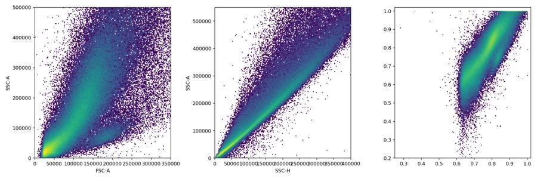
tool call · exec
text(await tools.write_stdin({session_id:24467,chars:"",yield_time_ms:1000,max_output_tokens:1000}));
for (const p of ["initial_controls.png","initial_scatter.png"]) {
const r=await tools.view_image({path:"/task/outputs/"+p});image(r.image_url);
}
tool output
Script completed Wall time 0.1 seconds Output:
{"chunk_id":"a42267","wall_time_seconds":0.0000024,"exit_code":0,"original_token_count":0,"output":""}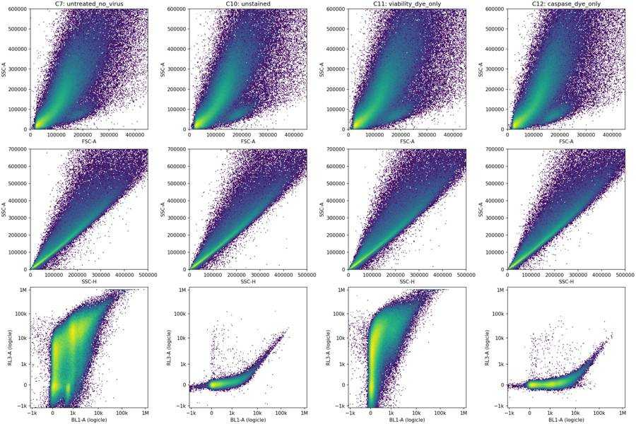
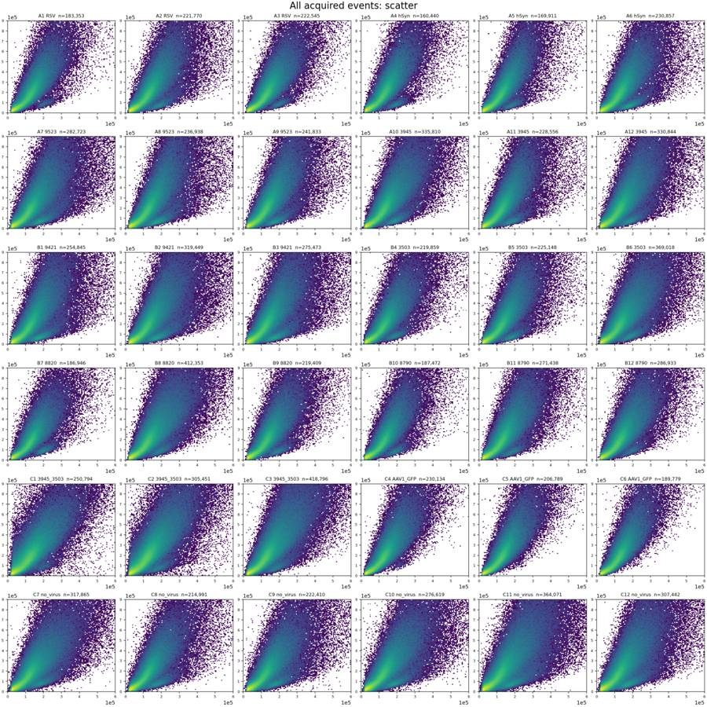
tool call · exec
for (const p of ["initial_rate.png","initial_time_fsc.png","initial_fluorescence.png"]) { const r=await tools.view_image({path:"/task/outputs/"+p});image(r.image_url);}
text(await tools.exec_command({cmd:"python - <<'PY'\nimport pandas as pd\nq=pd.read_csv('/task/outputs/initial_qc.csv')\ncols=['well','events','max_time_gap','rate_cv','rate_end_start','fsc_median_end_start','FSC-A_sat_pct','SSC-A_sat_pct','SSC-H_sat_pct','BL1-A_sat_pct','RL3-A_sat_pct']\nprint(q[cols].round(3).to_string(index=False))\nPY",max_output_tokens:5000}));
tool output
Script completed Wall time 0.4 seconds Output:
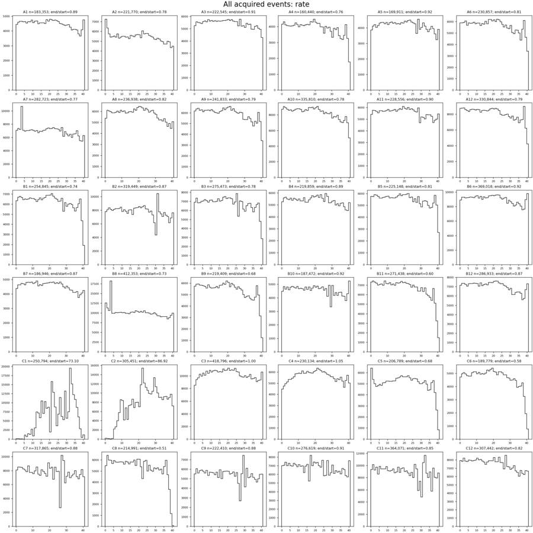
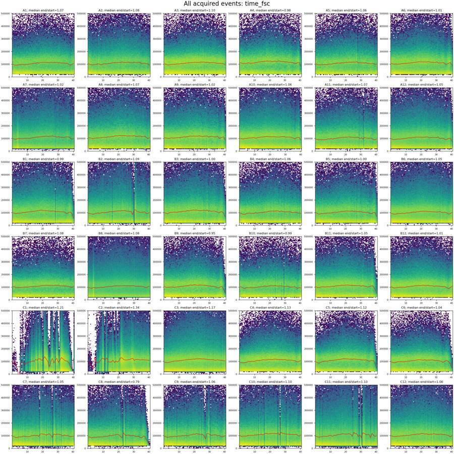
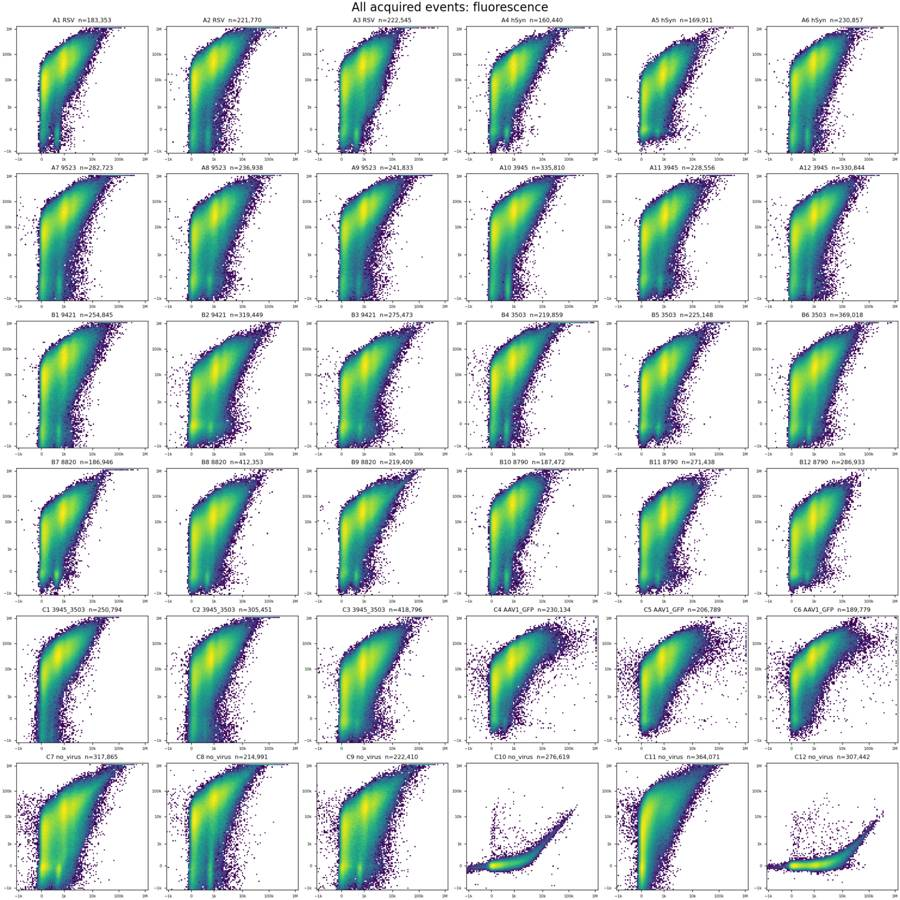
{"chunk_id":"9e462f","wall_time_seconds":0.106679329,"exit_code":0,"original_token_count":1379,"output":"well events max_time_gap rate_cv rate_end_start fsc_median_end_start FSC-A_sat_pct SSC-A_sat_pct SSC-H_sat_pct BL1-A_sat_pct RL3-A_sat_pct\n A1 183353 0.012 0.059 0.887 1.070 0.148 1.823 0.191 0.000 0.061\n A2 221770 0.038 0.089 0.775 1.079 0.255 2.530 0.366 0.000 0.135\n A3 222545 0.023 0.055 0.908 1.096 0.070 1.210 0.102 0.000 0.061\n A4 160440 0.015 0.118 0.765 0.984 0.209 2.344 0.348 0.000 0.113\n A5 169911 0.069 0.064 0.923 1.062 0.099 2.247 0.230 0.000 0.014\n A6 230857 0.026 0.098 0.811 1.009 0.107 1.788 0.170 0.000 0.047\n A7 282723 0.069 0.110 0.773 1.018 0.334 3.193 0.451 0.000 0.106\n A8 236938 0.085 0.084 0.821 1.067 0.236 3.636 0.468 0.000 0.041\n A9 241833 0.047 0.101 0.791 1.018 0.192 2.816 0.331 0.000 0.064\n A10 335810 0.027 0.093 0.775 1.057 0.111 2.246 0.222 0.000 0.036\n A11 228556 0.087 0.062 0.899 1.071 0.161 2.507 0.302 0.000 0.028\n A12 330844 0.028 0.106 0.785 1.048 0.119 2.351 0.242 0.000 0.031\n B1 254845 0.092 0.137 0.742 0.990 0.228 3.067 0.443 0.000 0.060\n B2 319449 0.135 0.113 0.869 1.091 0.339 3.147 0.419 0.000 0.008\n B3 275473 0.078 0.125 0.785 1.004 0.249 3.057 0.367 0.000 0.010\n B4 219859 0.024 0.058 0.886 1.060 0.280 2.348 0.410 0.000 0.165\n B5 225148 0.043 0.099 0.813 0.996 0.156 2.559 0.318 0.000 0.026\n B6 369018 0.034 0.059 0.916 1.051 0.155 2.151 0.240 0.000 0.015\n B7 186946 0.017 0.062 0.874 1.079 0.107 1.326 0.135 0.000 0.032\n B8 412353 0.012 0.143 0.728 1.080 0.097 1.915 0.140 0.000 0.005\n B9 219409 0.015 0.162 0.680 0.951 0.120 2.023 0.206 0.000 0.017\n B10 187472 0.177 0.075 0.924 0.989 0.079 1.653 0.166 0.000 0.043\n B11 271438 0.029 0.170 0.602 1.050 0.065 1.826 0.119 0.000 0.006\n B12 286933 0.014 0.071 0.874 1.014 0.053 1.610 0.103 0.000 0.003\n C1 250794 1.285 0.812 73.100 1.207 0.329 2.783 0.288 0.000 0.025\n C2 305451 0.411 0.508 86.921 1.336 0.309 2.943 0.347 0.000 0.049\n C3 418796 0.044 0.062 1.001 1.170 0.267 3.244 0.329 0.000 0.013\n C4 230134 0.010 0.080 1.046 1.133 0.078 1.787 0.141 0.013 0.005\n C5 206789 0.040 0.172 0.684 1.116 0.060 1.807 0.111 0.024 0.006\n C6 189779 0.025 0.186 0.582 1.043 0.041 1.658 0.117 0.014 0.009\n C7 317865 0.339 0.141 0.877 1.053 0.488 2.656 0.381 0.000 0.062\n C8 214991 0.324 0.228 0.513 0.792 0.460 2.860 0.524 0.000 0.272\n C9 222410 0.337 0.123 0.883 1.060 0.674 3.260 0.616 0.000 0.133\n C10 276619 0.133 0.092 0.906 1.104 0.598 3.260 0.582 0.000 0.000\n C11 364071 0.138 0.137 0.853 1.101 0.786 4.331 0.848 0.000 0.087\n C12 307442 0.055 0.084 0.825 1.062 0.422 3.426 0.507 0.000 0.000\n"}14
agent
C1 and C2 show pronounced interruptions and surges in event rate. Several wells also show declining flow near the end of acquisition; I’m checking whether those declines coincide with changes in the cell populations before deciding which wells to exclude.
tool call · exec
text(await tools.apply_patch("*** Begin Patch\n*** Add File: /task/outputs/gate_plate.py\n+\"\"\"Reproduce the shared, uncompensated FlowKit strategy and reported counts.\"\"\"\n+from pathlib import Path\n+import json\n+import numpy as np\n+import pandas as pd\n+import flowkit as fk\n+\n+OUT = Path('/task/outputs')\n+RAW = Path('/task/inputs/raw')\n+POPULATIONS = ['Cells','Single_Cells','Live','Caspase_pos','Late_apoptosis']\n+PARENTS = ['All_events','Cells','Single_Cells','Live','Single_Cells']\n+CELL_VERTICES = [(50000,12000),(50000,140000),(120000,600000),(230000,1048576),\n+ (1048576,1048576),(1048576,160000),(200000,12000)]\n+SINGLET_VERTICES = [(5000,5000),(5000,20000),(650000,1040000),\n+ (1000000,1040000),(1000000,800000),(20000,8000)]\n+# Provisional fluorescence boundaries, to be finalized by inspecting gated controls.\n+LIVE_MAX = 500.0\n+DEAD_MIN = 2000.0\n+CASPASE_MIN = 1000.0\n+LOGICLE = dict(param_t=1048576, param_w=0.5, param_m=4.5, param_a=0)\n+\n+def make_strategy():\n+ gs = fk.GatingStrategy()\n+ tr = fk.transforms.LogicleTransform(**LOGICLE)\n+ gs.add_transform('fluorescence_logicle',tr)\n+ def raw(n):\n+ return fk.Dimension(n,compensation_ref='uncompensated')\n+ def fl(n,lo=None,hi=None):\n+ return fk.Dimension(n,compensation_ref='uncompensated',\n+ transformation_ref='fluorescence_logicle',\n+ range_min=None if lo is None else float(tr.apply(np.array([lo]))[0]),\n+ range_max=None if hi is None else float(tr.apply(np.array([hi]))[0]))\n+ gs.add_gate(fk.gates.PolygonGate('Cells',[raw('FSC-A'),raw('SSC-A')],CELL_VERTICES),('root',))\n+ gs.add_gate(fk.gates.PolygonGate('Single_Cells',[raw('SSC-H'),raw('SSC-A')],SINGLET_VERTICES),('root','Cells'))\n+ # Unbounded negative edges keep all negative-valued fluorescence events.\n+ gs.add_gate(fk.gates.RectangleGate('Live',[fl('BL1-A'),fl('RL3-A',hi=LIVE_MAX)]),('root','Cells','Single_Cells'))\n+ gs.add_gate(fk.gates.RectangleGate('Caspase_pos',[fl('BL1-A',lo=CASPASE_MIN),fl('RL3-A',hi=LIVE_MAX)]),('root','Cells','Single_Cells','Live'))\n+ late_raw=np.array([(CASPASE_MIN,DEAD_MIN),(2**22,DEAD_MIN),(2**22,2**22),(CASPASE_MIN,2**22)],float)\n+ gs.add_gate(fk.gates.PolygonGate('Late_apoptosis',[fl('BL1-A'),fl('RL3-A')],tr.apply(late_raw).tolist()),('root','Cells','Single_Cells'))\n+ return gs\n+\n+def export_strategy():\n+ gs=make_strategy()\n+ with open(OUT/'gates.xml','wb') as fh:\n+ fk.export_gatingml(gs,fh)\n+ reloaded=fk.parse_gating_xml(str(OUT/'gates.xml'))\n+ assert [a[0] for a in reloaded.get_gate_ids()]==['Cells','Single_Cells','Live','Caspase_pos','Late_apoptosis']\n+ print(reloaded.get_gate_hierarchy(),flush=True)\n+ return reloaded\n+\n+def write_counts(gs):\n+ layout=pd.read_csv('/task/inputs/plate_layout.csv')\n+ rows=[]\n+ for row in layout.itertuples(index=False):\n+ sample=fk.Sample(str(RAW/row.file))\n+ result=gs.gate_sample(sample)\n+ counts={'All_events':len(sample.get_events(source='raw'))}\n+ for name,parent in zip(POPULATIONS,PARENTS):\n+ count=int(result.get_gate_count(name))\n+ counts[name]=count\n+ parent_count=counts[parent]\n+ assert 0<=count<=parent_count\n+ rows.append(dict(file=row.file,well=row.well,population=name,count=count,\n+ parent_population=parent,pct_of_parent=100.*count/parent_count if parent_count else 0.))\n+ print(row.well,counts,flush=True)\n+ pd.DataFrame(rows).to_csv(OUT/'counts.csv',index=False)\n+ assert len(rows)==180\n+\n+if __name__=='__main__':\n+ import argparse\n+ p=argparse.ArgumentParser();p.add_argument('--export-only',action='store_true');a=p.parse_args()\n+ strategy=export_strategy()\n+ if not a.export_only:\n+ write_counts(strategy)\n*** End Patch"));
text(await tools.exec_command({cmd:"OPENBLAS_NUM_THREADS=1 python /task/outputs/gate_plate.py",yield_time_ms:1000,max_output_tokens:2000}));
tool output
Script completed
Wall time 1.2 seconds
Output:
{}
{"chunk_id":"c89f51","wall_time_seconds":1.000627194,"session_id":55144,"original_token_count":98,"output":"root\n╰── Cells\n ╰── Single_Cells\n ├── Live\n │ ╰── Caspase_pos\n ╰── Late_apoptosis\nA1 {'All_events': 183353, 'Cells': 137117, 'Single_Cells': 123252, 'Live': 2568, 'Caspase_pos': 93, 'Late_apoptosis': 45361}\nA2 {'All_events': 221770, 'Cells': 166920, 'Single_Cells': 145053, 'Live': 8018, 'Caspase_pos': 548, 'Late_apoptosis': 52766}\n"}tool call · exec
text(await tools.exec_command({cmd:"OPENBLAS_NUM_THREADS=1 python - <<'PY'\nimport sys\nsys.path.insert(0,'/task/outputs')\nfrom gate_plate import *\ngs=fk.parse_gating_xml(str(OUT/'gates.xml'))\nfor well in ['C7','C8','C9','C10','C11','C12']:\n s=fk.Sample(str(RAW/f'Caspase_KO_RNAswap-rep2_caspase_Group_{well}.fcs'));e=s.get_events(source='raw');r=gs.gate_sample(s)\n print(well, {n:int(r.get_gate_count(n)) for n in POPULATIONS})\n for pop in ['Single_Cells','Live']:\n v=e[r.get_gate_membership(pop)]\n print(pop,len(v),'BL1 quantiles',np.quantile(v[:,3],[.1,.5,.9,.95,.99,.995,.999]),'RL3 quantiles',np.quantile(v[:,4],[.1,.5,.9,.95,.99,.995,.999]))\nPY",yield_time_ms:1000,max_output_tokens:5000}));
text(await tools.write_stdin({session_id:55144,chars:"",yield_time_ms:1000,max_output_tokens:1000}));
tool output
Script completed
Wall time 1.2 seconds
Output:
{"chunk_id":"17a450","wall_time_seconds":1.000285483,"session_id":47467,"original_token_count":0,"output":""}
{"chunk_id":"f3775d","wall_time_seconds":0.00000151,"exit_code":0,"original_token_count":1082,"output":"Warning: truncated output (original token count: 1082)\nTotal output lines: 34\n\nA3 {'All_events': 222545, 'Cells': 170358, 'Single_Cells': 154509, 'Live': 7844, 'Caspase_pos': 330, 'Late_apoptosis': 56573}\nA4 {'All_events': 160440, 'Cells': 125138, 'Single_Cells': 111633, 'Live': 4584, 'Caspase_pos': 183, 'Late_apoptosis': 42715}\nA5 {'All_events': 169911, 'Cells': 129362, 'Single_Cells': 116149, 'Live': 7784, 'Caspase_pos': 540, 'Late_apoptosis': 40521}\nA6 {'All_events': 230857, 'Cells': 177454, 'Single_Cells': 158530, 'Live': 12519, 'Caspase_pos': 662, 'Late_apoptosis': 60008}\nA7 {'All_events': 282723, 'Cells': 213515, 'Single_Cells': 180970, 'Live': 13913, 'Caspase_pos': 844, 'Late_apoptosis': 70838}\nA8 {'All_events': 236938, 'Cells': 182781, 'Single_Cells': 156506, 'Live': 17831, 'Caspase_pos': 1520, 'Late_apoptosis': 65564}\nA9 {'All_events': 241833, 'Cells': 188105, 'Single_Cells': 163962, 'Live': 10551, 'Caspase_pos': 885, 'Late_apoptosis': 64223}\nA10 {'All_events': 335810, 'Cells': 253331, 'Single_Cells': 219643, 'Live': 10013, 'Caspase_pos': 367, 'Late_apoptosis': 88385}\nA11 {'All_events': 228556, 'Cells': 168397, 'Single_Cells': 148918, 'Live': 11382, 'Caspase_pos': 1062, 'Late_apoptosis': 64496}\nA12 {'All_events': 330844, 'Cells': 244986, 'Single_Cells': 212846, 'Live': 12888, 'Caspase_pos': 1069, 'Late_apoptosis': 86652}\nB1 {'All_events': 254845, 'Cells': 189982, 'Single_Cells': 163878, 'Live': 15685, 'Caspase_pos': 1200, 'Late_apoptosis': 61079}\nB2 {'All_events': 319449, 'Cells': 236751, 'Single_Cells': 200287, 'Live': 28628, 'Caspase_pos': 3486, 'Late_apoptosis': 83924}\nB3 {'All_events': 275473, 'Cells': 209057, 'Single_Cells': 179029, 'Live': 21572, 'Caspase_pos': 2297, 'Late_apoptosis': 78558}\nB4 {'All_events': 219859, 'Cells': 161687, 'Single_Cells': 142945, 'Live': 6900, 'Caspase_pos': 389, 'Late_apoptosis': 47541}\nB5 {'All_events': 225148, 'Cells': 165837, 'Single_Cells': 146531, 'Live': 9969, 'Caspase_pos': 752, 'Late_apoptosis': 57572}\nB6 {'All_events': 369018, 'Cells': 271326, 'Single_Cells': 234142, 'Live': 18627, 'Caspase_…82 tokens truncated…163344, 'Single_Cells': 145397, 'Live': 7469, 'Caspase_pos': 427, 'Late_apoptosis': 52610}\nB10 {'All_events': 187472, 'Cells': 137901, 'Single_Cells': 125536, 'Live': 5674, 'Caspase_pos': 332, 'Late_apoptosis': 41694}\nB11 {'All_events': 271438, 'Cells': 204485, 'Single_Cells': 181932, 'Live': 10615, 'Caspase_pos': 1012, 'Late_apoptosis': 73826}\nB12 {'All_events': 286933, 'Cells': 215150, 'Single_Cells': 191953, 'Live': 10726, 'Caspase_pos': 887, 'Late_apoptosis': 73398}\nC1 {'All_events': 250794, 'Cells': 192347, 'Single_Cells': 160839, 'Live': 4069, 'Caspase_pos': 136, 'Late_apoptosis': 36241}\nC2 {'All_events': 305451, 'Cells': 237407, 'Single_Cells': 200237, 'Live': 9692, 'Caspase_pos': 897, 'Late_apoptosis': 56898}\nC3 {'All_events': 418796, 'Cells': 317822, 'Single_Cells': 264379, 'Live': 20221, 'Caspase_pos': 1635, 'Late_apoptosis': 92094}\nC4 {'All_events': 230134, 'Cells': 174961, 'Single_Cells': 157231, 'Live': 2881, 'Caspase_pos': 162, 'Late_apoptosis': 53789}\nC5 {'All_events': 206789, 'Cells': 157419, 'Single_Cells': 141418, 'Live': 3232, 'Caspase_pos': 148, 'Late_apoptosis': 50716}\nC6 {'All_events': 189779, 'Cells': 143376, 'Single_Cells': 130593, 'Live': 2018, 'Caspase_pos': 129, 'Late_apoptosis': 49304}\nC7 {'All_events': 317865, 'Cells': 233216, 'Single_Cells': 194661, 'Live': 31312, 'Caspase_pos': 5049, 'Late_apoptosis': 72633}\nC8 {'All_events': 214991, 'Cells': 154989, 'Single_Cells': 133370, 'Live': 10567, 'Caspase_pos': 1156, 'Late_apoptosis': 50361}\nC9 {'All_events': 222410, 'Cells': 162966, 'Single_Cells': 137232, 'Live': 18961, 'Caspase_pos': 2426, 'Late_apoptosis': 55983}\nC10 {'All_events': 276619, 'Cells': 208268, 'Single_Cells': 174151, 'Live': 174075, 'Caspase_pos': 12666, 'Late_apoptosis': 4}\nC11 {'All_events': 364071, 'Cells': 268251, 'Single_Cells': 214451, 'Live': 32870, 'Caspase_pos': 123, 'Late_apoptosis': 13880}\nC12 {'All_events': 307442, 'Cells': 229661, 'Single_Cells': 192067, 'Live': 191958, 'Caspase_pos': 94261, 'Late_apoptosis': 24}\n"}tool call · exec
text(await tools.write_stdin({session_id:47467,chars:"",yield_time_ms:1000,max_output_tokens:5000}));
tool output
Script completed
Wall time 0.0 seconds
Output:
{"chunk_id":"cc4b8b","wall_time_seconds":0.00000498,"exit_code":0,"original_token_count":664,"output":"C7 {'Cells': 233216, 'Single_Cells': 194661, 'Live': 31312, 'Caspase_pos': 5049, 'Late_apoptosis': 72633}\nSingle_Cells 194661 BL1 quantiles [ 196. 920. 2338. 3019. 4752. 5506. 7398.68] RL3 quantiles [1.1400000e+02 6.9890000e+03 3.4291000e+04 4.7989000e+04 8.3734200e+04\n 1.0111740e+05 1.4724806e+05]\nLive 31312 BL1 quantiles [ 43. 520. 1201.9 1630. 2626.56 3211.335 5811.316] RL3 quantiles [-410. 18. 385. 441. 486. 493. 498.]\nC8 {'Cells': 154989, 'Single_Cells': 133370, 'Live': 10567, 'Caspase_pos': 1156, 'Late_apoptosis': 50361}\nSingle_Cells 133370 BL1 quantiles [ 166. 845. 2105. 2715. 4429. 5146.775 7227.203] RL3 quantiles [ 1072. 25487.5 97648.8 132562.1 224863.24 271205.325\n 385721.432]\nLive 10567 BL1 quantiles [ 11. 285. 1058.4 1602.7 3545.84 5292.19 9506.058] RL3 quantiles [-1052. -184. 317. 403. 481. 490. 498.]\nC9 {'Cells': 162966, 'Single_Cells': 137232, 'Live': 18961, 'Caspase_pos': 2426, 'Late_apoptosis': 55983}\nSingle_Cells 137232 BL1 quantiles [ 157. 920. 2335. 3024.45 4833.69 5670. 7899.456] RL3 quantiles [1.61000000e+02 9.90200000e+03 4.55439000e+04 6.30048500e+04\n 1.08629690e+05 1.32043645e+05 1.86272681e+05]\nLive 18961 BL1 quantiles [ 21. 329. 1138. 1664. 3593.2 5033.4 12914.28] RL3 quantiles [-468. -23. 364. 429. 484. 492. 498.]\nC10 {'Cells': 208268, 'Single_Cells': 174151, 'Live': 174075, 'Caspase_pos': 12666, 'Late_apoptosis': 4}\nSingle_Cells 174151 BL1 quantiles [ 42. 212. 798. 1221. 2070.5 2433. 3299.65] RL3 quantiles [-41. 27. 105. 132. 195. 224. 317.]\nLive 174075 BL1 quantiles [ 42. 212. 798. 1221. 2069. 2431.63 3287.926] RL3 quantiles [-41. 27. 105. 132. 193. 221. 292.]\nC11 {'Cells': 268251, 'Single_Cells': 214451, 'Live': 32870, 'Caspase_pos': 123, 'Late_apoptosis': 13880}\nSingle_Cells 214451 BL1 quantiles [ 30. 175. 740. 1193. 2080. 2468.5 3323.75] RL3 quantiles [8.000000e+01 6.916000e+03 3.315100e+04 4.747400e+04 8.457800e+04\n 1.030820e+05 1.496085e+05]\nLive 32870 BL1 quantiles [ -14. 58. 178. 256. 651. 905. 1476.393] RL3 quantiles [-545. -50. 361. 429. 485. 492.655 498. ]\nC12 {'Cells': 229661, 'Single_Cells': 192067, 'Live': 191958, 'Caspase_pos': 94261, 'Late_apoptosis': 24}\nSingle_Cells 192067 BL1 quantiles [ 160. 985. 2391. 3049. 4863.34 5730.67 8258.472] RL3 quantiles [-42. 25. 102. 129. 193. 223. 337.]\nLive 191958 BL1 quantiles [ 160. 985. 2390. 3049. 4863. 5730. 8246.215] RL3 quantiles [-42. 25. 102. 129. 190. 218. 294.]\n"}tool call · exec
text(await tools.apply_patch("*** Begin Patch\n*** Add File: /task/outputs/review_plate.py\n+\"\"\"Diagnostic plots and quantified QC; no filtering of reported events.\"\"\"\n+from pathlib import Path\n+import json\n+import numpy as np\n+import pandas as pd\n+import matplotlib\n+matplotlib.use('Agg')\n+import matplotlib.pyplot as plt\n+from matplotlib.colors import LogNorm\n+from gate_plate import *\n+\n+gs=fk.parse_gating_xml(str(OUT/'gates.xml'))\n+tr=gs.get_transform('fluorescence_logicle')\n+layout=pd.read_csv('/task/inputs/plate_layout.csv')\n+tickraw=np.array([-1000,0,100,1000,10000,100000,1000000.])\n+ticks=tr.apply(tickraw)\n+ticknames=['−1k','0','100','1k','10k','100k','1M']\n+control_wells=['C7','C9','C10','C11','C12']\n+cf,ca=plt.subplots(4,5,figsize=(22,17),constrained_layout=True)\n+ff,fa=plt.subplots(6,6,figsize=(20,20),constrained_layout=True)\n+tf,ta=plt.subplots(6,6,figsize=(20,20),constrained_layout=True)\n+sf,sa=plt.subplots(6,6,figsize=(20,20),constrained_layout=True)\n+hf,ha=plt.subplots(2,2,figsize=(14,10),constrained_layout=True)\n+control_data={}\n+qc=[];temporal=[]\n+\n+def fluoraxes(ax):\n+ ax.set_xticks(ticks,ticknames,fontsize=7)\n+ ax.set_yticks(ticks,ticknames,fontsize=7)\n+ ax.set_xlim(tr.apply(np.array([-2000.,300000.])))\n+ ax.set_ylim(tr.apply(np.array([-2000.,500000.])))\n+ ax.axhline(tr.apply(np.array([LIVE_MAX]))[0],color='cyan',lw=1)\n+ ax.axhline(tr.apply(np.array([DEAD_MIN]))[0],color='orange',lw=1)\n+ ax.axvline(tr.apply(np.array([CASPASE_MIN]))[0],color='red',lw=1)\n+\n+def outline(ax,v,color='red'):\n+ v=np.vstack([v,v[0]])\n+ ax.plot(v[:,0],v[:,1],color=color,lw=1)\n+\n+for i,row in layout.iterrows():\n+ s=fk.Sample(str(RAW/row.file));e=s.get_events(source='raw');r=gs.gate_sample(s)\n+ cells=r.get_gate_membership('Cells');single=r.get_gate_membership('Single_Cells');live=r.get_gate_membership('Live')\n+ late=r.get_gate_membership('Late_apoptosis');casp=r.get_gate_membership('Caspase_pos')\n+ t=e[:,0];f=e[:,1];ssc=e[:,2];bl=e[:,3];rl=e[:,4];h=e[:,6]\n+ fl=tr.apply(e[:,[3,4]])\n+ rate_edges=np.arange(0,np.ceil(t.max()*2)/2+.25,.5)\n+ rates=np.histogram(t,rate_edges)[0]/.5\n+ center=(rate_edges[1:]+rate_edges[:-1])/2\n+ # Last partial bin is shown, but omitted from end-rate comparisons below.\n+ bins=np.digitize(t,rate_edges)-1\n+ for b,mid in enumerate(center):\n+ m=bins==b\n+ if m.sum()==0:\n+ temporal.append(dict(well=row.well,time_mid=mid,n=0,rate=0))\n+ continue\n+ sm=m&single;lm=m&live\n+ temporal.append(dict(well=row.well,time_mid=mid,n=int(m.sum()),rate=rates[b],\n+ median_fsc=float(np.median(f[m])),median_ssc=float(np.median(ssc[m])),\n+ cells_pct=100*np.mean(cells[m]),singles_pct=100*np.mean(single[m]),\n+ live_pct_single=100*np.mean(live[sm]) if sm.any() else np.nan,\n+ late_pct_single=100*np.mean(late[sm]) if sm.any() else np.nan,\n+ caspase_pct_live=100*np.mean(casp[lm]) if lm.any() else np.nan,\n+ singlet_bl1_median=float(np.median(bl[sm])) if sm.any() else np.nan,\n+ singlet_rl3_median=float(np.median(rl[sm])) if sm.any() else np.nan,\n+ median_fscw=float(np.median(e[m,7])),median_sscw=float(np.median(e[m,8]))))\n+ a=ta.flat[i]\n+ a.stairs(rates,rate_edges,color='black',lw=.7)\n+ a.set_ylim(bottom=0);a.set_xlim(0,42);a.tick_params(labelsize=7)\n+ b=a.twinx();m=np.array([q['median_fsc'] if 'median_fsc' in q else np.nan for q in temporal[-len(center):]])\n+ b.plot(center,m/1000,color='red',lw=.8);b.set_ylim(0,180);b.tick_params(labelsize=7,colors='red')\n+ a.set_title(f'{row.well} {row.construct}',fontsize=9)\n+ a=fa.flat[i]\n+ a.hist2d(fl[single,0],fl[single,1],bins=130,range=[[-.1,1.02],[-.1,1.02]],norm=LogNorm())\n+ fluoraxes(a)\n+ a.set_title(f'{row.well}; singlets={single.sum():,}',fontsize=9)\n+ a=sa.flat[i]\n+ a.hist2d(h[cells],ssc[cells],bins=120,range=[[0,700000],[0,1050000]],norm=LogNorm())\n+ outline(a,SINGLET_VERTICES);a.set_xlim(0,700000);a.set_ylim(0,1050000)\n+ a.ticklabel_format(style='sci',axis='both',scilimits=(0,0));a.tick_params(labelsize=7)\n+ a.set_title(f'{row.well}; singlets/cells={100*single.sum()/cells.sum():.1f}%',fontsize=9)\n+ met={'file':row.file,'well':row.well,'all_events':len(e),'cells':int(cells.sum()),'singlets':int(single.sum()),'live':int(live.sum()),'duration_s':t.max()-t.min()}\n+ dt=np.diff(t)\n+ met.update(max_gap_s=dt.max(),gaps_over_100ms=int(sum(dt>.1)),gap_time_over_100ms_s=float(dt[dt>.1].sum()),time_backwards=int(sum(dt<0)))\n+ for name,mask in [('all',np.ones(len(e),bool)),('cells',cells),('singlets',single),('live',live)]:\n+ met[name+'_n']=int(mask.sum())\n+ for ch,index in [('FSC-A',1),('SSC-A',2),('BL1-A',3),('RL3-A',4),('SSC-H',6)]:\n+ met[name+'_'+ch+'_ceiling_pct']=100*np.mean(e[mask,index]>=1048575)\n+ met[name+'_'+ch+'_floor_pct']=100*np.mean(e[mask,index]<=-65536)\n+ for ch,index in [('BL1-A',3),('RL3-A',4)]:\n+ for q in [1,50,95,99,99.5,99.9]:\n+ met[name+'_'+ch+'_q'+str(q)]=float(np.percentile(e[mask,index],q))\n+ for label,low,high in [('start',0,5),('baseline',5,25),('pre_end',32,37),('last3',37,40),('last1',t.max()-1,t.max())]:\n+ m=(t>=low)&(t<high);sm=m&single;lm=m&live\n+ met[label+'_events']=int(m.sum());met[label+'_rate']=m.sum()/(high-low)\n+ met[label+'_median_fsc']=float(np.median(f[m])) if m.any() else np.nan\n+ met[label+'_cells_pct']=100*np.mean(cells[m]) if m.any() else np.nan\n+ met[label+'_single_pct']=100*np.mean(single[m]) if m.any() else np.nan\n+ met[label+'_live_pct_single']=100*np.mean(live[sm]) if sm.any() else np.nan\n+ met[label+'_late_pct_single']=100*np.mean(late[sm]) if sm.any() else np.nan\n+ met[label+'_caspase_pct_live']=100*np.mean(casp[lm]) if lm.any() else np.nan\n+
… [3,033 more characters not shown]tool output
Script completed
Wall time 1.2 seconds
Output:
{}
{"chunk_id":"b625db","wall_time_seconds":1.000214983,"session_id":47079,"original_token_count":0,"output":""}tool call · exec
text(await tools.exec_command({cmd:"python - <<'PY'\nimport pandas as pd\nq=pd.read_csv('/task/outputs/initial_qc.csv')\nprint(q[['well','BL1-A_floor_pct','RL3-A_floor_pct','FSC-A_floor_pct','SSC-A_floor_pct','FSC-W_q99','SSC-W_q99']].to_string(index=False))\nPY",max_output_tokens:4000}));
text(await tools.write_stdin({session_id:47079,chars:"",yield_time_ms:1000,max_output_tokens:1000}));
tool output
Script completed
Wall time 5.3 seconds
Output:
{"chunk_id":"a53b18","wall_time_seconds":0.137914815,"exit_code":0,"original_token_count":879,"output":"well BL1-A_floor_pct RL3-A_floor_pct FSC-A_floor_pct SSC-A_floor_pct FSC-W_q99 SSC-W_q99\n A1 0.000000 0.000000 0.000000 0.000000 187.00 189.0\n A2 0.000000 0.002706 0.000000 0.007215 206.00 207.0\n A3 0.000000 0.004943 0.001348 0.012132 186.00 188.0\n A4 0.000000 0.000000 0.000000 0.008103 192.00 194.0\n A5 0.000000 0.000000 0.000000 0.002943 183.00 185.0\n A6 0.000000 0.000000 0.000000 0.003465 195.00 197.0\n A7 0.000000 0.005306 0.000000 0.016270 224.00 225.0\n A8 0.000000 0.001266 0.000000 0.012239 212.00 213.0\n A9 0.000000 0.002068 0.000000 0.009097 204.68 206.0\n A10 0.000000 0.000298 0.000000 0.004765 213.00 214.0\n A11 0.000000 0.001750 0.000000 0.007438 195.00 197.0\n A12 0.000000 0.000000 0.000000 0.011486 210.00 212.0\n B1 0.000000 0.001570 0.000000 0.009417 213.00 214.0\n B2 0.000000 0.000626 0.000000 0.022226 230.00 230.0\n B3 0.000000 0.000363 0.000000 0.031945 218.00 220.0\n B4 0.000000 0.008187 0.000000 0.024106 204.00 206.0\n B5 0.000000 0.000444 0.000000 0.005330 197.00 198.0\n B6 0.000000 0.000813 0.000000 0.007859 219.00 220.0\n B7 0.000000 0.000000 0.000000 0.002675 184.00 186.0\n B8 0.000000 0.000000 0.000000 0.001698 218.00 219.0\n B9 0.000000 0.000000 0.000000 0.006837 194.00 196.0\n B10 0.000000 0.006401 0.000000 0.012802 181.00 183.0\n B11 0.000000 0.000000 0.000000 0.001474 196.00 198.0\n B12 0.000000 0.000000 0.000000 0.001743 192.00 195.0\n C1 0.000000 0.000000 0.053829 0.695790 250.00 241.0\n C2 0.000000 0.002619 0.032738 0.476345 234.00 229.0\n C3 0.000000 0.000000 0.000000 0.029609 242.00 242.0\n C4 0.000000 0.000000 0.000000 0.004345 188.00 190.0\n C5 0.000000 0.000000 0.000000 0.000000 186.00 189.0\n C6 0.000000 0.000000 0.000000 0.001054 179.00 182.0\n C7 0.005348 0.039639 0.001573 0.208265 250.00 249.0\n C8 0.001395 0.046514 0.001861 0.106516 227.00 227.0\n C9 0.005845 0.045861 0.000450 0.218965 240.00 239.0\n C10 0.000000 0.000000 0.001085 0.150387 247.00 247.0\n C11 0.000000 0.033235 0.000824 0.203532 274.00 274.0\n C12 0.000000 0.000000 0.000000 0.044561 239.00 239.0\n"}
{"chunk_id":"dbfb84","wall_time_seconds":5.001552756,"session_id":47079,"original_token_count":28,"output":"A1\nA2\nA3\nA4\nA5\nA6\nA7\nA8\nA9\nA10\nA11\nA12\nB1\nB2\nB3\nB4\nB5\nB6\nB7\nB8\nB9\nB10\nB11\nB12\nC1\nC2\nC3\nC4\nC5\nC6\nC7\nC8\nC9\nC10\n"}19
agent
The initial `gates.xml` is saved, reloads successfully, and produces all 180 count rows. After scatter and singlet gating, C12 shows the expected CellEvent increase. I’m refining the fluorescence boundaries against C10–C12 so background fluorescence is not counted as caspase positivity.
tool call · exec
text(await tools.write_stdin({session_id:47079,chars:"",yield_time_ms:1000,max_output_tokens:1000}));
for (const p of ["fluorescence_control_hist.png","gate_review_controls.png"]) {const r=await tools.view_image({path:"/task/outputs/"+p});image(r.image_url);}
text(await tools.exec_command({cmd:"python - <<'PY'\nimport pandas as pd\nq=pd.read_csv('/task/outputs/qc_metrics.csv')\nq['end_rate_ratio']=q.last1_rate/q.baseline_rate\nq['end_fsc_ratio']=q.last1_median_fsc/q.baseline_median_fsc\nprint(q[['well','baseline_rate','last1_rate','end_rate_ratio','end_fsc_ratio','baseline_cells_pct','last1_cells_pct','baseline_live_pct_single','last1_live_pct_single','baseline_caspase_pct_live','last1_caspase_pct_live','gaps_over_100ms','gap_time_over_100ms_s']].round(2).to_string(index=False))\nPY",max_output_tokens:5000}));
tool output
Script completed Wall time 0.4 seconds Output:
{"chunk_id":"9a5c32","wall_time_seconds":0.00000305,"exit_code":0,"original_token_count":2,"output":"C11\nC12\n"}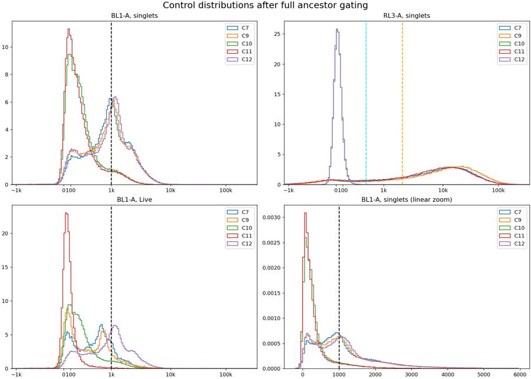
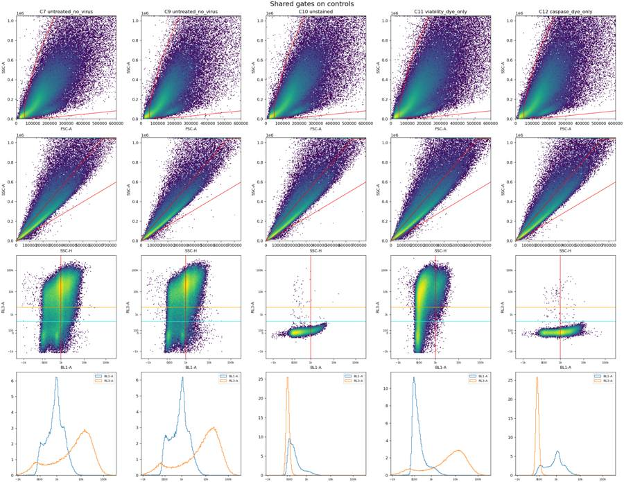
{"chunk_id":"f341ee","wall_time_seconds":0.128674377,"exit_code":0,"original_token_count":2220,"output":"well baseline_rate last1_rate end_rate_ratio end_fsc_ratio baseline_cells_pct last1_cells_pct baseline_live_pct_single last1_live_pct_single baseline_caspase_pct_live last1_caspase_pct_live gaps_over_100ms gap_time_over_100ms_s\n A1 4640.35 4748.0 1.02 0.99 75.04 76.71 2.04 2.06 4.41 4.35 0 0.00\n A2 5546.35 4483.0 0.81 0.86 75.50 71.96 5.57 6.19 6.72 6.15 0 0.00\n A3 5640.65 4273.0 0.76 0.89 76.72 74.56 5.09 5.48 4.76 5.49 0 0.00\n A4 4145.45 1775.0 0.43 0.73 78.56 68.00 4.21 2.98 4.39 2.86 0 0.00\n A5 4332.55 3911.0 0.90 0.92 76.36 72.62 6.63 6.76 7.12 4.55 0 0.00\n A6 5962.10 3405.0 0.57 0.83 77.40 71.54 7.93 6.42 5.46 2.67 0 0.00\n A7 7127.75 6248.0 0.88 0.92 75.68 73.56 7.54 7.40 6.18 6.98 0 0.00\n A8 6088.45 5063.0 0.83 0.92 77.41 75.19 11.44 11.17 8.91 7.53 0 0.00\n A9 6239.80 3409.0 0.55 0.79 78.30 70.34 6.40 5.53 8.63 6.40 0 0.00\n A10 8707.45 5042.0 0.58 0.78 75.96 69.58 4.54 3.27 3.83 1.85 0 0.00\n A11 5810.15 5438.0 0.94 0.95 74.12 72.84 7.58 7.91 9.53 8.48 0 0.00\n A12 8525.40 4220.0 0.49 0.74 74.90 65.43 6.03 4.79 8.33 8.66 0 0.00\n B1 6614.65 1895.0 0.29 0.52 75.70 56.09 9.64 6.08 7.94 7.81 0 0.00\n B2 8168.55 7631.0 0.93 0.95 74.71 73.42 14.27 14.09 12.83 8.92 1 0.14\n B3 7134.60 2859.0 0.40 0.64 76.71 62.43 11.97 10.49 11.11 4.40 0 0.00\n B4 5524.55 5181.0 0.94 0.92 73.81 71.57 4.82 4.72 5.65 4.35 0 0.00\n B5 5749.55 2717.0 0.47 0.70 74.24 65.33 6.68 4.95 8.33 3.53 0 0.00\n B6 9362.60 9794.0 1.05 0.98 74.06 73.46 7.85 8.34 12.12 10.23 0 0.00\n B7 4747.70 4254.0 0.90 1.00 74.01 73.60 5.04 5.76 4.59 5.99 0 0.00\n B8 10144.00 9967.0 0.98 1.01 74.61 75.28 5.69 5.67 6.98 5.21 0 0.00\n B9 5770.25 1238.0 0.21 0.49 75.17 52.83 5.13 4.77 6.25 0.00 0 0.00\n B10 4738.95 5249.0 1.11 0.92 73.88 71.73 4.52 4.11 5.69 4.20 1 0.18\n B11 7154.40 1477.0 0.21 0.47 76.05 51.52 5.89 4.77 10.10 5.56 0 0.00\n B12 7353.90 7357.0 1.00 0.97 75.61 74.83
… [3,024 more characters not shown]tool call · exec
text(await tools.apply_patch("*** Begin Patch\n*** Update File: /task/outputs/gate_plate.py\n@@\n-# Provisional fluorescence boundaries, to be finalized by inspecting gated controls.\n+# Shared control-derived fluorescence boundaries, in raw detector units.\n@@\n-CASPASE_MIN = 1000.0\n+CASPASE_MIN = 2100.0\n*** End Patch"));
text(await tools.exec_command({cmd:"OPENBLAS_NUM_THREADS=1 python /task/outputs/gate_plate.py",yield_time_ms:1000,max_output_tokens:1500}));
text(await tools.exec_command({cmd:"python - <<'PY'\nimport pandas as pd\nq=pd.read_csv('/task/outputs/qc_metrics.csv')\nt=pd.read_csv('/task/outputs/time_bins.csv')\nfor w in q.well:\n b=q[q.well==w].iloc[0]\n s=t[t.well==w].tail(9).copy()\n s['relative_rate']=s.rate/b.baseline_rate\n print(w,'final bins:',[(round(x.time_mid,1), round(x.relative_rate,2),int(x.median_fsc)) for x in s.itertuples()])\nPY",max_output_tokens:5000}));
tool output
Script completed
Wall time 1.5 seconds
Output:
{}
{"chunk_id":"998a7f","wall_time_seconds":1.001265674,"session_id":35252,"original_token_count":66,"output":"root\n╰── Cells\n ╰── Single_Cells\n ├── Live\n │ ╰── Caspase_pos\n ╰── Late_apoptosis\nA1 {'All_events': 183353, 'Cells': 137117, 'Single_Cells': 123252, 'Live': 2568, 'Caspase_pos': 12, 'Late_apoptosis': 9634}\n"}
{"chunk_id":"13f3ee","wall_time_seconds":0.165345468,"exit_code":0,"original_token_count":1881,"output":"A1 final bins: [(36.8, 0.88, 105419), (37.2, 0.82, 95893), (37.8, 0.81, 98243), (38.2, 0.77, 93302), (38.8, 0.83, 92066), (39.2, 0.9, 95186), (39.8, 0.86, 104268), (40.2, 1.01, 106827), (40.8, 0.84, 102062)]\nA2 final bins: [(36.8, 0.85, 105465), (37.2, 0.93, 108356), (37.8, 0.87, 104821), (38.2, 0.86, 105369), (38.8, 0.9, 102599), (39.2, 0.77, 105130), (39.8, 0.79, 103225), (40.2, 0.82, 91901), (40.8, 0.62, 90331)]\nA3 final bins: [(36.8, 0.92, 104780), (37.2, 0.93, 108497), (37.8, 0.92, 105475), (38.2, 0.91, 105343), (38.8, 0.87, 105787), (39.2, 0.87, 102782), (39.8, 0.88, 102757), (40.2, 0.73, 97870), (40.8, 0.73, 93867)]\nA4 final bins: [(37.2, 0.83, 104099), (37.8, 0.88, 104959), (38.2, 0.91, 111222), (38.8, 1.07, 114322), (39.2, 0.97, 116529), (39.8, 0.61, 105564), (40.2, 0.54, 94758), (40.8, 0.38, 79940), (41.2, 0.04, 67531)]\nA5 final bins: [(36.8, 0.92, 104736), (37.2, 0.94, 101137), (37.8, 0.87, 103836), (38.2, 0.85, 106513), (38.8, 0.79, 103455), (39.2, 0.76, 95139), (39.8, 0.77, 92321), (40.2, 0.88, 95314), (40.8, 0.68, 102645)]\nA6 final bins: [(36.8, 0.78, 97884), (37.2, 0.88, 100356), (37.8, 0.92, 105216), (38.2, 0.96, 107047), (38.8, 1.09, 112959), (39.2, 0.81, 112899), (39.8, 0.66, 108836), (40.2, 0.65, 98990), (40.8, 0.38, 77161)]\nA7 final bins: [(36.8, 0.93, 112923), (37.2, 1.07, 113380), (37.8, 0.74, 103620), (38.2, 0.73, 96880), (38.8, 0.74, 95979), (39.2, 0.78, 97221), (39.8, 0.83, 93835), (40.2, 0.89, 100520), (40.8, 0.27, 102127)]\nA8 final bins: [(36.8, 0.9, 113171), (37.2, 0.9, 117426), (37.8, 0.66, 112932), (38.2, 0.87, 111637), (38.8, 0.68, 102355), (39.2, 0.73, 97070), (39.8, 0.72, 102445), (40.2, 0.81, 103703), (40.8, 0.79, 107608)]\nA9 final bins: [(36.8, 0.79, 100887), (37.2, 0.77, 106749), (37.8, 0.89, 104577), (38.2, 0.91, 106837), (38.8, 1.02, 111891), (39.2, 0.9, 112089), (39.8, 0.7, 113347), (40.2, 0.57, 90417), (40.8, 0.45, 84229)]\nA10 final bins: [(36.8, 0.72, 98165), (37.2, 0.94, 105416), (37.8, 0.81, 109443), (38.2, 0.92, 108928), (38.8, 0.97, 109894), (39.2, 0.73, 108185), (39.8, 0.61, 97200), (40.2, 0.61, 82906), (40.8, 0.11, 72171)]\nA11 final bins: [(36.8, 0.92, 101654), (37.2, 0.82, 98964), (37.8, 0.77, 95365), (38.2, 0.83, 96151), (38.8, 0.88, 87232), (39.2, 0.83, 89895), (39.8, 0.88, 88484), (40.2, 0.89, 98166), (40.8, 0.92, 97903)]\nA12 final bins: [(36.8, 0.87, 87106), (37.2, 0.85, 94752), (37.8, 0.87, 100054), (38.2, 0.94, 101882), (38.8, 1.16, 101731), (39.2, 0.78, 101135), (39.8, 0.65, 95013), (40.2, 0.55, 81073), (40.8, 0.32, 67004)]\nB1 final bins: [(36.8, 0.88, 94090), (37.2, 0.88, 102009), (37.8, 0.96, 104135), (38.2, 1.11, 106221), (38.8, 0.84, 104989), (39.2, 0.76, 100204), (39.8, 0.53, 78035), (40.2, 0.34, 65685), (40.8, 0.22, 49891)]\nB2 final bins: [(36.8, 0.88, 105534), (37.2, 0.91, 110325), (37.8, 0.81, 99990), (38.2, 0.76, 94154), (38.8, 0.78, 93802), (39.2, 0.77, 93553), (39.8, 0.88, 92075), (40.2, 0.88, 97524), (40.8, 0.76, 108074)]\nB3 final bins: [(36.8, 0.89, 99365), (37.2, 0.92, 105584), (37.8, 1.0, 109891), (38.2, 0.89, 107410), (38.8, 0.86, 110575), (39.2, 0.75, 98394), (39.8, 0.6, 88225), (40.2, 0.44, 74612), (40.8, 0.22, 58669)]\nB4 final bins: [(36.8, 0.91, 105850), (37.2, 0.89, 106842), (37.8, 0.84, 99293), (38.2, 0.84, 96188), (38.8, 0.8, 95779), (39.2, 0.99, 101603), (39.8, 0.72, 92102), (40.2, 0.97, 92506), (40.8, 0.76, 100101)]\nB5 final bins: [(36.8, 0.89, 92370), (37.2, 0.89, 90689), (37.8, 0.91, 97009), (38.2, 0.9, 101062), (38.8, 1.13, 102955), (39.2, 0.96, 104804), (39.8, 0.79, 95600), (40.2, 0.58, 78324), (40.8, 0.37, 67912)]\nB6 final bins: [(36.8, 0.83, 101234), (37.2, 0.78, 97362), (37.8, 0.83, 91142), (38.2, 0.84, 90858), (38.8, 0.84, 88343), (39.2, 0.96, 94419), (39.8, 0.99, 96433), (40.2, 1.05, 101142), (40.8, 0.74, 103257)]\nB7 final bins: [(36.8, 0.85, 107990), (37.2, 0.83, 107443), (37.8, 0.75, 101334), (38.2, 0.88, 101937), (38.8, 0.78, 94782), (39.2, 0.85, 94611), (39.8, 0.85, 99795), (40.2, 0.81, 100805), (40.8, 0.99, 108059)]\nB8 final bins: [(36.8, 0.86, 101245), (37.2, 0.83, 97138), (37.8, 0.82, 96417), (38.2, 0.9, 93608), (38.8, 0.89, 100860), (39.2, 0.95, 101912), (39.8, 0.9, 103465), (40.2, 1.07, 106250), (40.8, 0.25, 103788)]\nB9 final bins: [(36.8, 0.81, 94686), (37.2, 0.93, 103119), (37.8, 1.09, 102318), (38.2, 0.92, 106184), (38.8, 0.78, 99950), (39.2, 0.63, 87448), (39.8, 0.42, 75507), (40.2, 0.24, 60306), (40.8, 0.16, 44113)]\nB10 final bins: [(36.8, 0.85, 103502), (37.2, 0.89, 99601), (37.8, 0.83, 90022), (38.2, 0.73, 87224), (38.8, 0.9, 90140), (39.2, 0.85, 89856), (39.8, 0.98, 99105), (40.2, 1.21, 93058), (40.8, 0.88, 96760)]\nB11 final bins: [(36.8, 0.78, 106405), (37.2, 0.91, 108473), (37.8, 0.95, 111554), (38.2, 0.76, 104693), (38.8, 0.63, 101200), (39.2, 0.52, 87945), (39.8, 0.33, 70935), (40.2, 0.24, 55752), (40.8, 0.14, 45399)]\nB12 final bins: [(36.8, 0.77, 100631), (37.2, 0.79, 93523), (37.8, 0.76, 84734), (38.2, 0.75, 86820), (38.8, 0.84, 89845), (39.2, 0.91, 98667), (39.8, 0.91, 98208), (40.2, 1.05, 104684), (40.8, 0.62, 103107)]\nC1 final bins: [(36.8, 1.32, 99713), (37.2, 1.01, 86265), (37.8, 0.71, 73392), (38.2, 0.44, 55128), (38.8, 0.32, 46788), (39.2, 0.03, 31533), (39.8, 0.01, 27792), (40.2, 0.04, 79541), (40.8, 0.35, 127243)]\nC2 final bins: [(36.8, 1.25, 112925), (37.2, 1.15, 112177), (37.8, 1.19, 108814), (38.2, 1.24, 110694), (38.8, 1.14, 108280), (39.2, 1.29, 109191), (39.8, 1.3, 110889), (40.2, 1.02, 107612), (40.8, 0.72, 102694)]\nC3 final bins: [(36.8, 0
… [2,065 more characters not shown]21
agent
I’ve set the shared BL1-A cutoff to 2,100 raw units, just above the 99th percentile of both negative controls. The remaining QC distinction is clear: some wells show brief flow dips that recover, while others end with a simultaneous fall in event rate and scatter. I’m quantifying those terminal changes for the flags.
tool call · exec
text(await tools.write_stdin({session_id:35252,chars:"",yield_time_ms:1000,max_output_tokens:1500}));
text(await tools.exec_command({cmd:"OPENBLAS_NUM_THREADS=1 python /task/outputs/review_plate.py",yield_time_ms:1000,max_output_tokens:1000}));
text(await tools.exec_command({cmd:"python - <<'PY'\nimport pandas as pd\nq=pd.read_csv('/task/outputs/qc_metrics.csv')\nfor c in ['singlets_BL1-A_ceiling_pct','singlets_RL3-A_ceiling_pct','singlets_BL1-A_floor_pct','singlets_RL3-A_floor_pct']:\n print(c,q[c].max(),q.loc[q[c].idxmax(),'well'])\nprint(q[q.well.isin(['C1','C2'])][['well','start_events','start_rate','baseline_rate','pre_end_rate','max_gap_s','gaps_over_100ms','gap_time_over_100ms_s']].to_string(index=False))\nPY",max_output_tokens:2500}));
tool output
Script completed
Wall time 1.4 seconds
Output:
{"chunk_id":"cfa922","wall_time_seconds":0.0000028,"exit_code":0,"original_token_count":1105,"output":"A2 {'All_events': 221770, 'Cells': 166920, 'Single_Cells': 145053, 'Live': 8018, 'Caspase_pos': 85, 'Late_apoptosis': 12424}\nA3 {'All_events': 222545, 'Cells': 170358, 'Single_Cells': 154509, 'Live': 7844, 'Caspase_pos': 20, 'Late_apoptosis': 14700}\nA4 {'All_events': 160440, 'Cells': 125138, 'Single_Cells': 111633, 'Live': 4584, 'Caspase_pos': 18, 'Late_apoptosis': 9253}\nA5 {'All_events': 169911, 'Cells': 129362, 'Single_Cells': 116149, 'Live': 7784, 'Caspase_pos': 78, 'Late_apoptosis': 8691}\nA6 {'All_events': 230857, 'Cells': 177454, 'Single_Cells': 158530, 'Live': 12519, 'Caspase_pos': 97, 'Late_apoptosis': 14520}\nA7 {'All_events': 282723, 'Cells': 213515, 'Single_Cells': 180970, 'Live': 13913, 'Caspase_pos': 159, 'Late_apoptosis': 16262}\nA8 {'All_events': 236938, 'Cells': 182781, 'Single_Cells': 156506, 'Live': 17831, 'Caspase_pos': 251, 'Late_apoptosis': 16280}\nA9 {'All_events': 241833, 'Cells': 188105, 'Single_Cells': 163962, 'Live': 10551, 'Caspase_pos': 176, 'Late_apoptosis': 14600}\nA10 {'All_events': 335810, 'Cells': 253331, 'Single_Cells': 219643, 'Live': 10013, 'Caspase_pos': 54, 'Late_apoptosis': 21342}\nA11 {'All_events': 228556, 'Cells': 168397, 'Single_Cells': 148918, 'Live': 11382, 'Caspase_pos': 186, 'Late_apoptosis': 15219}\nA12 {'All_events': 330844, 'Cells': 244986, 'Single_Cells': 212846, 'Live': 12888, 'Caspase_pos': 234, 'Late_apoptosis': 20916}\nB1 {'All_events': 254845, 'Cells': 189982, 'Single_Cells': 163878, 'Live': 15685, 'Caspase_pos': 139, 'Late_apoptosis': 13639}\nB2 {'All_events': 319449, 'Cells': 236751, 'Single_Cells': 200287, 'Live': 28628, 'Caspase_pos': 578, 'Late_apoptosis': 21156}\nB3 {'All_events': 275473, 'Cells': 209057, 'Single_Cells': 179029, 'Live': 21572, 'Caspase_pos': 442, 'Late_apoptosis': 19805}\nB4 {'All_events': 219859, 'Cells': 161687, 'Single_Cells': 142945, 'Live': 6900, 'Caspase_pos': 44, 'Late_apoptosis': 10634}\nB5 {'All_events': 225148, 'Cells': 165837, 'Single_Cells': 146531, 'Live': 9969, 'Caspase_pos': 127, 'Late_apoptosis': 12784}\nB6 {'All_events': 369018, 'Cells': 271326, 'Single_Cells': 234142, 'Live': 18627, 'Caspase_pos': 264, 'Late_apoptosis': 27361}\nB7 {'All_events': 186946, 'Cells': 138704, 'Single_Cells': 126394, 'Live': 6372, 'Caspase_pos': 44, 'Late_apoptosis': 10728}\nB8 {'All_events': 412353, 'Cells': 306930, 'Single_Cells': 264609, 'Live': 15062, 'Caspase_pos': 132, 'Late_apoptosis': 23980}\nB9 {'All_events': 219409, 'Cells': 163344, 'Single_Cells': 145397, 'Live': 7469, 'Caspase_pos': 64, 'Late_apoptosis': 13435}\nB10 {'All_events': 187472, 'Cells': 137901, 'Single_Cells': 125536, 'Live': 5674, 'Caspase_pos': 40, 'Late_apoptosis': 8946}\nB11 {'All_events': 271438, 'Cells': 204485, 'Single_Cells': 181932, 'Live': 10615, 'Caspase_pos': 250, 'Late_apoptosis': 17708}\nB12 {'All_events': 286933, 'Cells': 215150, 'Single_Cells': 191953, 'Live': 10726, 'Caspase_pos': 161, 'Late_apoptosis': 17933}\nC1 {'All_events': 250794, 'Cells': 192347, 'Single_Cells': 160839, 'Live': 4069, 'Caspase_pos': 11, 'Late_apoptosis': 6467}\nC2 {'All_events': 305451, 'Cells': 237407, 'Single_Cells': 200237, 'Live': 9692, 'Caspase_pos': 238, 'Late_apoptosis': 12065}\nC3 {'All_events': 418796, 'Cells': 317822, 'Single_Cells': 264379, 'Live': 20221, 'Caspase_pos': 346, 'Late_apoptosis': 21688}\nC4 {'All_events': 230134, 'Cells': 174961, 'Single_Cells': 157231, 'Live': 2881, 'Caspase_pos': 29, 'Late_apoptosis': 13695}\nC5 {'All_events': 206789, 'Cells': 157419, 'Single_Cells': 141418, 'Live': 3232, 'Caspase_pos': 22, 'Late_apoptosis': 12032}\nC6 {'All_events': 189779, 'Cells': 143376, 'Single_Cells': 130593, 'Live': 2018, 'Caspase_pos': 20, 'Late_apoptosis': 12539}\nC7 {'All_events': 317865, 'Cells': 233216, 'Single_Cells': 194661, 'Live': 31312, 'Caspase_pos': 694, 'Late_apoptosis': 22684}\nC8 {'All_events': 214991, 'Cells': 154989, 'Single_Cells': 133370, 'Live': 10567, 'Caspase_pos': 290, 'Late_apoptosis': 12982}\nC9 {'All_events': 222410, 'Cells': 162966, 'Single_Cells': 137232, 'Live': 18961, 'Caspase_pos': 578, 'Late_apoptosis': 16635}\nC10 {'All_events': 276619, 'Cells': 208268, 'Single_Cells': 174151, 'Live': 174075, 'Caspase_pos': 1647, 'Late_apoptosis': 2}\nC11 {'All_events': 364071, 'Cells': 268251, 'Single_Cells': 214451, 'Live': 32870, 'Caspase_pos': 6, 'Late_apoptosis': 2023}\nC12 {'All_events': 307442, 'Cells': 229661, 'Single_Cells': 192067, 'Live': 191958, 'Caspase_pos': 26110, 'Late_apoptosis': 12}\n"}
{"chunk_id":"ff9f33","wall_time_seconds":1.000679713,"session_id":35761,"original_token_count":0,"output":""}
{"chunk_id":"8a52d6","wall_time_seconds":0.103205416,"exit_code":0,"original_token_count":124,"output":"singlets_BL1-A_ceiling_pct 0.0022972134800487 C6\nsinglets_RL3-A_ceiling_pct 0.0 A1\nsinglets_BL1-A_floor_pct 0.0 A1\nsinglets_RL3-A_floor_pct 0.0044987628402189 C8\nwell start_events start_rate baseline_rate pre_end_rate max_gap_s gaps_over_100ms gap_time_over_100ms_s\n C1 259 51.8 5952.35 12765.8 1.285 8 2.350\n C2 504 100.8 7528.60 9009.4 0.411 10 1.776\n"}tool call · exec
text(await tools.apply_patch("*** Begin Patch\n*** Add File: /task/outputs/finalize_report.py\n+\"\"\"Write one quantified QC decision per file and concise method notes.\"\"\"\n+from pathlib import Path\n+import pandas as pd\n+\n+OUT=Path('/task/outputs')\n+layout=pd.read_csv('/task/inputs/plate_layout.csv')\n+q=pd.read_csv(OUT/'qc_metrics.csv').set_index('well')\n+counts=pd.read_csv(OUT/'counts.csv')\n+c=counts.pivot(index='well',columns='population',values='count')\n+rows=[]\n+for row in layout.itertuples(index=False):\n+ m=q.loc[row.well]\n+ rr=m.last1_rate/m.baseline_rate\n+ fr=m.last1_median_fsc/m.baseline_median_fsc\n+ n=int(m.all_events);singles=int(m.singlets);live=int(m.live)\n+ # Criteria use complete last-second windows, not a partially occupied histogram bin.\n+ interrupted=(m.gaps_over_100ms>=8 and m.gap_time_over_100ms_s>1\n+ and m.start_rate/m.pre_end_rate<.05)\n+ dry=(rr<.65 and fr<.85)\n+ gfp=row.control_type=='transduction_gfp'\n+ if interrupted:\n+ category='clog_or_interrupted_flow'\n+ evidence=(f'{n:,} events; {int(m.gaps_over_100ms)} inter-event gaps >100 ms, totaling '\n+ f'{m.gap_time_over_100ms_s:.3f} s (maximum {m.max_gap_s:.3f} s); '\n+ f'first 5 s: {int(m.start_events)} events ({m.start_rate:.1f}/s), '\n+ f'versus {m.pre_end_rate:.1f}/s at 32-37 s. Prolonged low-flow startup and recurrent interruptions/surges.')\n+ elif dry:\n+ category='ran_dry'\n+ evidence=(f'Terminal depletion consistent with running dry: final full 1 s rate '\n+ f'{m.last1_rate:.0f}/s vs {m.baseline_rate:.1f}/s at 5-25 s ({rr:.3f}x); '\n+ f'median FSC-A {m.last1_median_fsc:.0f} vs {m.baseline_median_fsc:.0f} ({fr:.3f}x); '\n+ f'Cells {m.last1_cells_pct:.2f}% vs {m.baseline_cells_pct:.2f}%. '\n+ f'{n:,} events; {singles:,} singlets. Decline confirmed in time plots.')\n+ elif gfp:\n+ category='other'\n+ evidence=(f'GFP and CellEvent occupy the same BL1-A detector (only 2 fluorescence detectors recorded); '\n+ f'Caspase_pos={int(c.loc[row.well,\"Caspase_pos\"])}/{live} Live and '\n+ f'Late_apoptosis={int(c.loc[row.well,\"Late_apoptosis\"])}/{singles} singlets '\n+ f'cannot be attributed specifically to caspase. Exclude from apoptosis comparisons; retain as transduction reference.')\n+ else:\n+ category='ok'\n+ evidence=(f'{n:,} events; {singles:,} singlets; {live:,} Live. '\n+ f'Final 1 s rate/baseline={rr:.3f}, median FSC-A/baseline={fr:.3f} '\n+ f'(baseline 5-25 s); maximum gap={1000*m.max_gap_s:.0f} ms, '\n+ f'total gaps >100 ms={m.gap_time_over_100ms_s:.3f} s. '\n+ f'Singlet BL1-A/RL3-A ceiling fractions='\n+ f'{m[\"singlets_BL1-A_ceiling_pct\"]:.4f}%/{m[\"singlets_RL3-A_ceiling_pct\"]:.4f}%.')\n+ if row.control_type=='unstained':\n+ evidence+=(f' Unstained control: {100*live/singles:.3f}% RL3-low; '\n+ f'{100*c.loc[row.well,\"Caspase_pos\"]/live:.3f}% above BL1 cutoff within Live.')\n+ elif row.control_type=='viability_dye_only':\n+ evidence+=(f' Zombie-only control: {100*live/singles:.2f}% Live; '\n+ f'{100*c.loc[row.well,\"Caspase_pos\"]/live:.3f}% BL1-positive within Live; bright RL3 mode present.')\n+ elif row.control_type=='caspase_dye_only':\n+ evidence+=(f' CellEvent-only control: {100*live/singles:.3f}% RL3-low; '\n+ f'{100*c.loc[row.well,\"Caspase_pos\"]/live:.2f}% BL1-positive within Live '\n+ f'versus {100*c.loc[\"C10\",\"Caspase_pos\"]/c.loc[\"C10\",\"Live\"]:.2f}% in C10.')\n+ if gfp and category!='other':\n+ evidence+=(f' Also GFP/CellEvent confounding in BL1-A: Caspase_pos='\n+ f'{int(c.loc[row.well,\"Caspase_pos\"])}/{live} Live; '\n+ f'Late_apoptosis={int(c.loc[row.well,\"Late_apoptosis\"])}/{singles} singlets; '\n+ f'neither is caspase-specific.')\n+ rows.append(dict(file=row.file,well=row.well,usable='yes' if category=='ok' else 'no',\n+ reason_category=category,evidence=evidence))\n+flags=pd.DataFrame(rows)\n+flags.to_csv(OUT/'flags.csv',index=False)\n+notes='''# Shared gating and quality assessment\n+\n+FlowKit 1.2.3 loaded all 36 FCS files. `gates.xml` contains exactly five gates with the requested names, shapes, channels and hierarchy. Every dimension is **uncompensated**; no channel correction, time gate, event removal or sample-specific gate was applied. Counts include each gate's complete ancestor chain, including flagged files, and come from the reloaded XML. Percentages use the stated parent (all acquired events for Cells).\n+\n+- **Cells:** a raw FSC-A × SSC-A polygon encloses the common cell cloud across controls and samples. The low edge starts at FSC-A 50,000 and SSC-A 12,000, excluding the low-FSC debris cluster; sloping sides follow the cloud's outer scatter envelope. Exact vertices are in the XML and reproduction script.\n+- **Single_Cells:** a raw SSC-H × SSC-A polygon brackets the dense diagonal (approximately area/height 0.8–1.6), rejecting the high-area multiplet tail. Its SSC-A upper edge is 1,040,000, below the 1,048,575 clipping value. Scatter gates were checked across all wells.\n+- **Live:** a two-dimensional rectangle spans all BL1-A and RL3-A <500. C10's singlet RL3-A 99.9th percentile is 317; the C11 negative mode and its low-density transition support 500 as the conservative negative upper edge.\n+- **Caspase_pos:** within Live, BL1-A ≥2,100, with the same RL3-A upper edge. C10/C11 singlet BL1-A 99th percentiles are 2,070.5/2,080. C12 shows the positive shift: 13.60% of Live exceeds the cutoff, versus 0.95% in C10 and 0.018% in C11. This conservative cutoff limits autofluorescence; negative and positive tails overlap, so weak activity may be missed
… [2,072 more characters not shown]tool output
Script completed
Wall time 0.3 seconds
Output:
{}
{"chunk_id":"ad00f0","wall_time_seconds":0.115045366,"exit_code":0,"original_token_count":347,"output":"well usable reason_category\n A1 yes ok\n A2 yes ok\n A3 yes ok\n A4 no ran_dry\n A5 yes ok\n A6 no ran_dry\n A7 yes ok\n A8 yes ok\n A9 no ran_dry\n A10 no ran_dry\n A11 yes ok\n A12 no ran_dry\n B1 no ran_dry\n B2 yes ok\n B3 no ran_dry\n B4 yes ok\n B5 no ran_dry\n B6 yes ok\n B7 yes ok\n B8 yes ok\n B9 no ran_dry\n B10 yes ok\n B11 no ran_dry\n B12 yes ok\n C1 no clog_or_interrupted_flow\n C2 no clog_or_interrupted_flow\n C3 yes ok\n C4 no other\n C5 no ran_dry\n C6 no ran_dry\n C7 yes ok\n C8 no ran_dry\n C9 yes ok\n C10 yes ok\n C11 yes ok\n C12 yes ok\nNotes words: 484\n"}tool call · exec
text(await tools.apply_patch("*** Begin Patch\n*** Add File: /task/outputs/validate_outputs.py\n+\"\"\"Verify schemas, saved GatingML, ancestry, raw-channel thresholds and counts.\"\"\"\n+from pathlib import Path\n+import hashlib\n+import json\n+import importlib.metadata\n+import numpy as np\n+import pandas as pd\n+from lxml import etree\n+import flowkit as fk\n+from gate_plate import OUT, RAW, POPULATIONS, PARENTS, LIVE_MAX, DEAD_MIN, CASPASE_MIN\n+\n+layout=pd.read_csv('/task/inputs/plate_layout.csv')\n+counts=pd.read_csv(OUT/'counts.csv')\n+flags=pd.read_csv(OUT/'flags.csv')\n+gs=fk.parse_gating_xml(str(OUT/'gates.xml'))\n+assert counts.columns.tolist()==['file','well','population','count','parent_population','pct_of_parent']\n+assert flags.columns.tolist()==['file','well','usable','reason_category','evidence']\n+assert len(counts)==180 and len(flags)==36\n+assert not counts.duplicated(['file','population']).any()\n+assert not flags.file.duplicated().any()\n+assert flags.well.tolist()==layout.well.tolist()\n+assert flags.file.tolist()==layout.file.tolist()\n+assert counts['count'].dtype.kind in 'iu' and (counts['count']>=0).all()\n+assert counts.pct_of_parent.between(0,100).all()\n+assert flags.usable.isin(['yes','no']).all()\n+assert ((flags.usable=='yes')==(flags.reason_category=='ok')).all()\n+assert flags.reason_category.isin(['ok','clog_or_interrupted_flow','ran_dry','too_few_events',\n+ 'saturation','bad_control','mislabeled_or_unexpected','other']).all()\n+assert flags.evidence.notna().all()\n+expected_paths=[('root',),('root','Cells'),('root','Cells','Single_Cells'),\n+ ('root','Cells','Single_Cells','Live'),('root','Cells','Single_Cells')]\n+expected_channels=[['FSC-A','SSC-A'],['SSC-H','SSC-A'],['BL1-A','RL3-A'],['BL1-A','RL3-A'],['BL1-A','RL3-A']]\n+assert gs.get_gate_ids()==list(zip(POPULATIONS,expected_paths))\n+for pop,path,channels in zip(POPULATIONS,expected_paths,expected_channels):\n+ gate=gs.get_gate(pop,path)\n+ assert [d.id for d in gate.dimensions]==channels\n+ assert all(d.compensation_ref=='uncompensated' for d in gate.dimensions)\n+ if pop in ['Live','Caspase_pos']:\n+ assert isinstance(gate,fk.gates.RectangleGate)\n+ else:\n+ assert isinstance(gate,fk.gates.PolygonGate)\n+root=etree.parse(str(OUT/'gates.xml'))\n+assert not root.xpath('//*[local-name()=\"spectrumMatrix\"]')\n+assert len(root.xpath('//*[local-name()=\"PolygonGate\" or local-name()=\"RectangleGate\"]'))==5\n+assert len(root.xpath('//*[local-name()=\"transformation\"]'))==1\n+\n+rechecked=[];settings=[];threshold_differences=[]\n+for row in layout.itertuples(index=False):\n+ sample=fk.Sample(str(RAW/row.file))\n+ e=sample.get_events(source='raw')\n+ assert sample.metadata['wellid']==row.well\n+ assert np.isfinite(e).all()\n+ assert sample.pnn_labels==['Time','FSC-A','SSC-A','BL1-A','RL3-A','FSC-H','SSC-H','FSC-W','SSC-W']\n+ result=gs.gate_sample(sample)\n+ rows=counts[counts.file==row.file]\n+ assert rows.well.unique().tolist()==[row.well]\n+ assert rows.population.tolist()==POPULATIONS\n+ assert rows.parent_population.tolist()==PARENTS\n+ masks={'All_events':np.ones(len(e),bool)}\n+ for pop,parent in zip(POPULATIONS,PARENTS):\n+ mask=result.get_gate_membership(pop)\n+ masks[pop]=mask\n+ assert not np.any(mask&~masks[parent])\n+ expected_count=int(result.get_gate_count(pop))\n+ assert expected_count==int(mask.sum())\n+ record=rows[rows.population==pop].iloc[0]\n+ assert record['count']==expected_count\n+ parent_count=masks[parent].sum()\n+ percent=100*expected_count/parent_count if parent_count else 0.\n+ assert np.isclose(record.pct_of_parent,percent,rtol=0,atol=1e-10)\n+ manual_live=masks['Single_Cells']&(e[:,4]<LIVE_MAX)\n+ manual_casp=manual_live&(e[:,3]>=CASPASE_MIN)\n+ manual_late=masks['Single_Cells']&(e[:,4]>=DEAD_MIN)&(e[:,3]>=CASPASE_MIN)\n+ for name,manual in [('Live',manual_live),('Caspase_pos',manual_casp),('Late_apoptosis',manual_late)]:\n+ differences=int(np.sum(manual!=masks[name]))\n+ threshold_differences.append(dict(well=row.well,population=name,events=differences))\n+ assert differences==0,(row.well,name,differences)\n+ assert not np.any(masks['Live']&masks['Late_apoptosis'])\n+ settings.append({k:sample.metadata[k] for k in ['timestep','cyt','date','par']+\n+ [f'p{i}v' for i in range(2,10)]})\n+ rechecked.append(dict(well=row.well,all_events=len(e),**{p:int(masks[p].sum()) for p in POPULATIONS}))\n+ print(row.well,'verified',flush=True)\n+assert all(s==settings[0] for s in settings)\n+summary=dict(flowkit_version=importlib.metadata.version('flowkit'),files=36,count_rows=180,\n+ flag_rows=36,gates=5,all_checks_passed=True,raw_fluorescence_mask_disagreements=0,\n+ total_events=sum(r['all_events'] for r in rechecked),\n+ usable_wells=flags[flags.usable=='yes'].well.tolist(),\n+ excluded_wells=flags[flags.usable=='no'].well.tolist(),\n+ flags_by_category=flags.groupby('reason_category').size().to_dict(),\n+ consistent_acquisition_settings=settings[0],\n+ sha256={p:hashlib.sha256((OUT/p).read_bytes()).hexdigest() for p in ['gates.xml','counts.csv','flags.csv','notes.md']})\n+(OUT/'validation.json').write_text(json.dumps(summary,indent=2)+'\\n')\n+print(json.dumps(summary,indent=2))\n*** End Patch"));
text(await tools.exec_command({cmd:"OPENBLAS_NUM_THREADS=1 python /task/outputs/validate_outputs.py",yield_time_ms:1000,max_output_tokens:1000}));
text(await tools.write_stdin({session_id:35761,chars:"",yield_time_ms:1000,max_output_tokens:1000}));
tool output
Script completed
Wall time 1.2 seconds
Output:
{}
{"chunk_id":"c24ef5","wall_time_seconds":1.000592444,"session_id":95050,"original_token_count":3,"output":"A1 verified\n"}
{"chunk_id":"2f3283","wall_time_seconds":0.00000135,"exit_code":0,"original_token_count":30,"output":"A1\nA2\nA3\nA4\nA5\nA6\nA7\nA8\nA9\nA10\nA11\nA12\nB1\nB2\nB3\nB4\nB5\nB6\nB7\nB8\nB9\nB10\nB11\nB12\nC1\nC2\nC3\nC4\nC5\nC6\nC7\nC8\nC9\nC10\nC11\nC12\n"}tool call · exec
text(await tools.write_stdin({session_id:95050,chars:"",yield_time_ms:1000,max_output_tokens:3000}));
for(const p of ["gated_fluorescence.png","time_quality.png","fluorescence_control_hist.png"]){const r=await tools.view_image({path:"/task/outputs/"+p});image(r.image_url);}
tool output
Script completed Wall time 0.1 seconds Output:
{"chunk_id":"0a1577","wall_time_seconds":0.00000336,"exit_code":0,"original_token_count":463,"output":"A2 verified\nA3 verified\nA4 verified\nA5 verified\nA6 verified\nA7 verified\nA8 verified\nA9 verified\nA10 verified\nA11 verified\nA12 verified\nB1 verified\nB2 verified\nB3 verified\nB4 verified\nB5 verified\nB6 verified\nB7 verified\nB8 verified\nB9 verified\nB10 verified\nB11 verified\nB12 verified\nC1 verified\nC2 verified\nC3 verified\nC4 verified\nC5 verified\nC6 verified\nC7 verified\nC8 verified\nC9 verified\nC10 verified\nC11 verified\nC12 verified\n{\n \"flowkit_version\": \"1.2.3\",\n \"files\": 36,\n \"count_rows\": 180,\n \"flag_rows\": 36,\n \"gates\": 5,\n \"all_checks_passed\": true,\n \"raw_fluorescence_mask_disagreements\": 0,\n \"total_events\": 9379064,\n \"usable_wells\": [\n \"A1\",\n \"A2\",\n \"A3\",\n \"A5\",\n \"A7\",\n \"A8\",\n \"A11\",\n \"B2\",\n \"B4\",\n \"B6\",\n \"B7\",\n \"B8\",\n \"B10\",\n \"B12\",\n \"C3\",\n \"C7\",\n \"C9\",\n \"C10\",\n \"C11\",\n \"C12\"\n ],\n \"excluded_wells\": [\n \"A4\",\n \"A6\",\n \"A9\",\n \"A10\",\n \"A12\",\n \"B1\",\n \"B3\",\n \"B5\",\n \"B9\",\n \"B11\",\n \"C1\",\n \"C2\",\n \"C4\",\n \"C5\",\n \"C6\",\n \"C8\"\n ],\n \"flags_by_category\": {\n \"clog_or_interrupted_flow\": 2,\n \"ok\": 20,\n \"other\": 1,\n \"ran_dry\": 13\n },\n \"consistent_acquisition_settings\": {\n \"timestep\": \"0.001\",\n \"cyt\": \"0A29009 Attune NxT Acoustic Focusing Cytometer (Lasers: BRV6Y)\",\n \"date\": \"17-Apr-2023\",\n \"par\": \"9\",\n \"p2v\": \"30\",\n \"p3v\": \"300\",\n \"p4v\": \"250\",\n \"p5v\": \"300\",\n \"p6v\": \"30\",\n \"p7v\": \"300\",\n \"p8v\": \"30\",\n \"p9v\": \"300\"\n },\n \"sha256\": {\n \"gates.xml\": \"c14595e69b3c2abb0e1d42701c3f8818d8db0edc8b5c1c6bbc27338d88fbc6ef\",\n \"counts.csv\": \"2020f9a8d166d19b9ae56ceb98585f41580421dc4daed02160bbbd4a79a494d8\",\n \"flags.csv\": \"76de2777ec4bbb3a1717cca12d9cb0491dc3edef97a0106e0e595f634761e09c\",\n \"notes.md\": \"636db424693575a6cd392047ec7472ac8601393bfb08d4116cf58bb9cd5913f1\"\n }\n}\n"}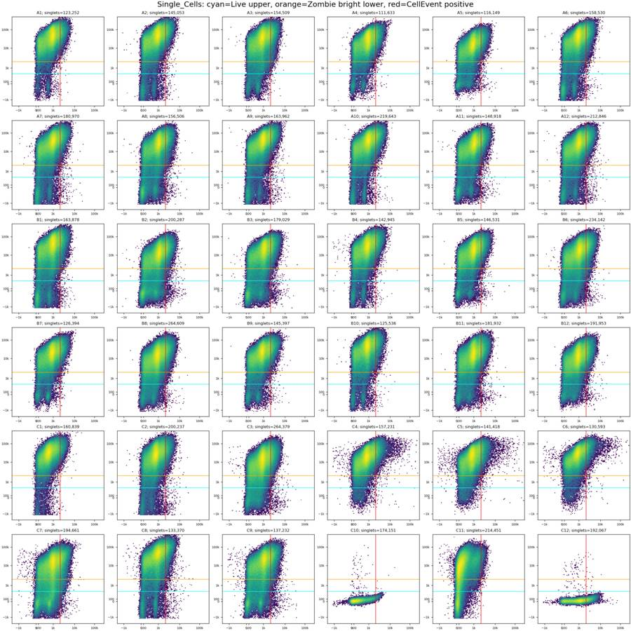
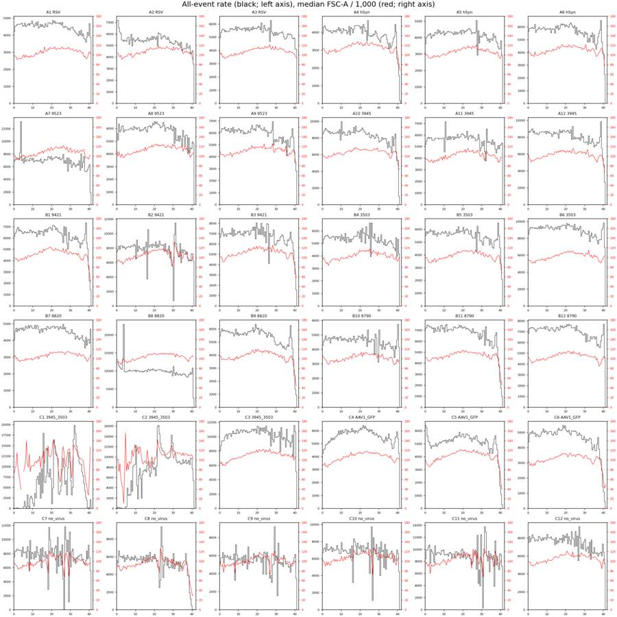
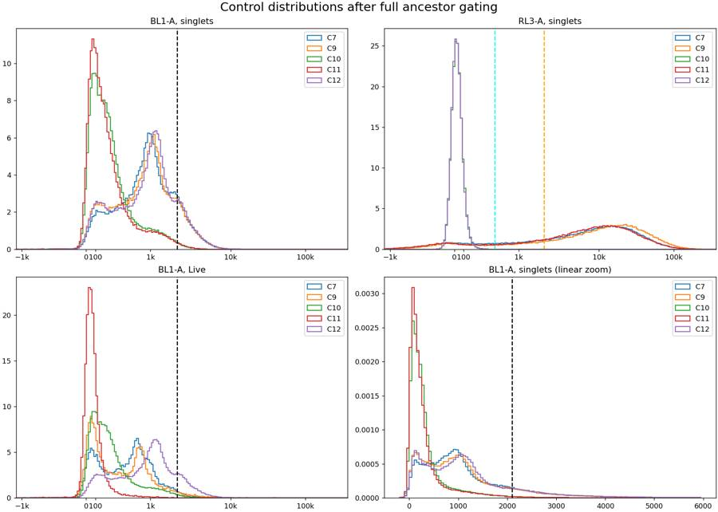
25
agent
Completed all 36 wells using one shared gate set. All 180 counts were verified against the reloaded XML.
- [gates.xml](/task/outputs/gates.xml)
- [counts.csv](/task/outputs/counts.csv)
- [flags.csv](/task/outputs/flags.csv)
- [notes.md](/task/outputs/notes.md)
**20 wells usable; 16 flagged:** 13 for terminal depletion, 2 for interrupted flow, and C4 for GFP confounding. C5–C6 also carry GFP/caspase confounding. Quantified evidence is included for every well.